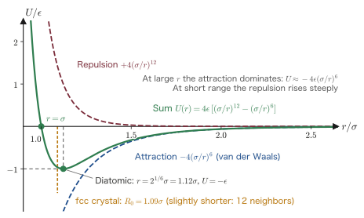
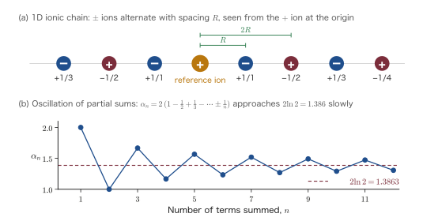
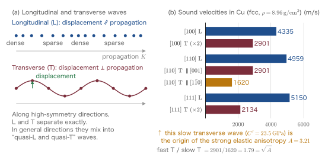

Chapter 12Crystal Binding and Elastic Constants
In Parts I and II we assembled the language for describing crystals and the tools that turn symmetry into calculation. From Part III on, we ask how those crystals actually behave. The first question is the most elementary one—why do atoms stay together instead of flying apart?
The quantity that answers this question is the cohesive energy. Surprisingly, its value is scattered over four orders of magnitude, from $10^{-3}\,\mathrm{eV}$ to $10\,\mathrm{eV}$, depending on the material. Solid Ne melts even at the temperature of liquid nitrogen, whereas tungsten remains solid up to $3695\,\mathrm{K}$. Where does this four-order-of-magnitude difference come from? The answer lies in the type of bond—van der Waals bonds, ionic bonds, covalent bonds, metallic bonds, and hydrogen bonds. In the first half of this chapter we derive these five types of bonding in a form that can be followed by hand calculation as far as possible. In particular, the van der Waals–London interaction is a typical case in which Kittel writes only the conclusion, so we write it out without skipping a single line, from the diagonalization of two harmonic oscillators to the expansion of the zero-point energy.
The second half of this chapter is about elasticity. At first sight it seems to be a different subject from bonding, but in fact the two are continuous. The vanishing of the first derivative of the binding energy $U(R)$ at $R=R_0$ gives the equilibrium condition, and the second derivative gives the elastic constants. In other words, an elastic constant is nothing but the “stiffness of the bond.” The bulk modulus of diamond is $442\,\mathrm{GPa}$ and that of sodium is $6.6\,\mathrm{GPa}$, a difference of a factor of 70; this is nothing other than the difference in stiffness between the C–C covalent bond and the metallic bond of Na.
In the discussion of elasticity, Neumann's principle, which we learned in Chapter 4, comes into its own. The elastic stiffness constant $C_{ij}$ is a $6\times6$ symmetric matrix, so in principle it has 21 independent components. In a cubic crystal, however, merely imposing the point-group operations reduces them to just three: $C_{11}, C_{12}, C_{44}$. Twenty-one becomes three. Section 12.7 is where we confirm this dramatic reduction with our own hands by applying the symmetry operations one at a time. Furthermore, these three constants completely determine the velocities of elastic waves traveling through a cubic crystal. The anisotropy that the speed of sound differs between the $[100]$ and $[110]$ directions—in copper the velocities of the transverse wave are $2901\,\mathrm{m/s}$ and $1620\,\mathrm{m/s}$, differing by a factor of 1.8—emerges merely from solving the secular equation.
These elastic waves are nothing other than the long-wavelength limit of the phonons treated in the next chapter. The slope near the origin of the dispersion relation $\omega(K)$ in Chapter 13 is the speed of sound found in this chapter. This chapter is a chapter on the theory of bonding, and at the same time a runway leading to phonons.
- The definition of the cohesive energy, and the four-order-of-magnitude difference in scale produced by the five types of bonds
- Complete derivation of the van der Waals–London interaction: diagonalize two coupled harmonic oscillators in normal coordinates and expand the difference of the zero-point energies to obtain $-1/R^6$
- Deriving $R_0/\sigma = 1.09$ from the Lennard-Jones potential and the fcc lattice sums $\sum{}' p_{ij}^{-12}=12.13188$, $\sum{}' p_{ij}^{-6}=14.45392$
- The Madelung energy of ionic crystals: derive $\alpha = 2\ln 2$ from a series for the one-dimensional chain, and touch on the conditional convergence in three dimensions and the idea behind the Ewald method
- Organizing covalent, metallic, and hydrogen bonds in the language of the molecular orbitals and irreducible representations of Part II
- The difference between the engineering and mathematical notations of the strain tensor (the factor-of-2 trap) and Voigt notation
- How Neumann's principle reduces the elastic constants of a cubic crystal to the three constants $C_{11}, C_{12}, C_{44}$
- Deriving the equation of motion of elastic waves in a cubic crystal and solving the secular equations for $[100]$, $[110]$, and $[111]$ to obtain the speed of sound
- The bulk modulus $B=(C_{11}+2C_{12})/3$, Poisson's ratio, the Zener anisotropy ratio, and measured values
- Practical cautions in obtaining elastic constants by first-principles calculations (the strain–energy method)
12.1 Why Do Atoms Bind? — Four Orders of Magnitude in Cohesive Energy
12.1.1 Definition of the cohesive energy
Definition: Cohesive energy
The energy required to decompose a crystal into separated neutral free atoms is called the cohesive energy $E_{\mathrm{coh}}$. It is usually expressed per atom, in units of $\mathrm{eV/atom}$ or $\mathrm{kJ/mol}$.
Sign convention: the crystal has lower energy, so if the total energy of the crystal is $U_{\mathrm{tot}}$ (negative), then
$$ E_{\mathrm{coh}} = -\frac{U_{\mathrm{tot}}}{N} > 0 $$The larger $E_{\mathrm{coh}}$ is, the “stronger the bonding” is.
Caution: The cohesive energy and the lattice energy are different things
In ionic crystals, two kinds of energy are easily confused.
- Lattice energy: the energy to decompose the crystal into free ions ($\mathrm{Na^+}$ and $\mathrm{Cl^-}$). For NaCl it is $7.95\,\mathrm{eV}$ per ion pair.
- Cohesive energy: the energy to decompose the crystal into neutral atoms ($\mathrm{Na}$ and $\mathrm{Cl}$). For NaCl it is $6.56\,\mathrm{eV}$ per ion pair $=3.28\,\mathrm{eV/atom}$.
The difference between the two is the difference between the ionization energy of $\mathrm{Na}$, $I=5.14\,\mathrm{eV}$, and the electron affinity of $\mathrm{Cl}$, $A=3.61\,\mathrm{eV}$:
$$ I - A = 5.14 - 3.61 = 1.53\ \mathrm{eV} $$ $$ E_{\mathrm{coh}}(\text{per pair}) = 7.95 - 1.53 = 6.42\ \mathrm{eV} \quad(\text{measured } 6.56\ \mathrm{eV}) $$There is one point to note here. On the Born–Haber cycle, $E_{\mathrm{coh}}=E_{\mathrm{lattice}}-(I-A)$ is an exact identity at absolute zero, and the van der Waals attraction and the zero-point vibration energy are included equally in both the lattice energy and the cohesive energy, so they cancel completely when the difference is taken. That is, the remaining $0.14\,\mathrm{eV}$ above is not a physical contribution but an inconsistency caused by the references of two measured values, quoted from separate sources, not being aligned. What matters mainly is the treatment of the zero-point vibration (the lattice zero-point energy of NaCl is about $0.06\,\mathrm{eV}$ per ion pair) and the temperature reference (a value converted to $0\,\mathrm{K}$ or a room-temperature value); it is not a “negligible error.” When comparing numbers from the literature, first check which definition is used, and then the reference at which the value was measured.
12.1.2 Five types of bonding and the four-order-of-magnitude scale
| Bond type | Substance | $E_{\mathrm{coh}}$ (eV/atom) | (kJ/mol) | Melting point (K) |
|---|---|---|---|---|
| van der Waals (inert gases) | He (solidifies only under pressure) | $\sim 0.001$ | $\sim 0.1$ | — |
| Ne | 0.020 | 1.88 | 24.6 | |
| Ar | 0.080 | 7.74 | 83.8 | |
| Kr | 0.116 | 11.2 | 115.8 | |
| Xe | 0.17 | 16.0 | 161.4 | |
| Hydrogen bond | Ice $\mathrm{H_2O}$ (per molecule) | 0.53 | 51 | 273 |
| Metallic | Na | 1.113 | 107.3 | 371 |
| Al | 3.39 | 327 | 933 | |
| Cu | 3.49 | 336.5 | 1358 | |
| W | 8.90 | 859 | 3695 | |
| Ionic | NaCl | 3.28 | 316 | 1074 |
| LiF | 4.46 | 430 | 1121 | |
| Covalent | Ge | 3.85 | 372 | 1211 |
| Si | 4.63 | 446 | 1687 | |
| C (diamond) | 7.37 | 711 | $\sim$4300 (sublimes) |
Physical Meaning: Three things to read from Table 12.1
- A four-order-of-magnitude difference in scale. The values range from $\sim10^{-3}\,\mathrm{eV}$ for solid He to $8.9\,\mathrm{eV}$ for W. This wide range means that the origins of the bonding themselves differ. The van der Waals force is a secondary effect, the “fluctuation of the electron cloud” (Section 12.2), whereas covalent and metallic bonding are primary effects, in which “electron orbitals overlap to form new states.” The hierarchy of effects is directly the hierarchy of energies.
- Correlation with the melting point. When $E_{\mathrm{coh}}$ and $T_m$ are plotted, a rough relation $k_B T_m \sim 0.03\,E_{\mathrm{coh}}$ to $0.1\,E_{\mathrm{coh}}$ can be seen. For metals the ratio is close to the lower limit, and for van der Waals crystals it is several times larger. For Ne, $k_BT_m = 2.1\,\mathrm{meV}$ and $E_{\mathrm{coh}}=20\,\mathrm{meV}$, so the ratio is $0.11$. For W, $k_BT_m=0.32\,\mathrm{eV}$ and $E_{\mathrm{coh}}=8.9\,\mathrm{eV}$, so the ratio is $0.036$. The stronger the bonding, the better it withstands heat—this looks obvious, but it is important that it holds quantitatively.
- $E_{\mathrm{coh}}$ increases monotonically along the inert-gas series. From Ne $\to$ Xe it goes $0.02 \to 0.17\,\mathrm{eV}$, an eightfold increase. The larger the atom, the “softer” the electron cloud becomes, and the polarizability $\alpha$ increases. In Section 12.2 we will derive $\Delta U \propto -\alpha^2/R^6$, which explains this monotonic increase.
Why? Every bond requires both “attraction” and “repulsion”
For any kind of bond, for an equilibrium distance $R_0$ to exist, $U(R)$ must have a minimum. That is, we need both
- attraction at long distances ($U$ increases with $R$, $\dd U/\dd R > 0$), and
- repulsion at short distances ($\dd U/\dd R < 0$).
The origin of the attraction depends on the type of bond (fluctuation of the electron cloud in van der Waals bonding, Coulomb attraction in ionic bonding, overlap of orbitals in covalent bonding), but the origin of the repulsion is the same in every bond. Namely:
- When closed-shell electron clouds overlap, the Pauli exclusion principle pushes electrons up into orbitals of higher energy (Pauli repulsion, exchange repulsion).
- The Coulomb repulsion between atomic nuclei, not completely screened, shows through.
Since this repulsion is proportional to the overlap of the electron wave functions, it decays exponentially with the interatomic distance. The form $\lambda\exp(-R/\rho)$ (Section 12.4) is physically correct, whereas the form $B/R^{12}$ (Section 12.3) is a matter of convenience, “because it is easy to calculate.” Keep this difference in mind.
12.2 Complete Derivation of the van der Waals–London Interaction
An Ar atom is a closed shell. It has no permanent dipole moment and no charge. Even so, argon solidifies below $83.8\,\mathrm{K}$. What attracts Ar atoms to one another?
The answer is the quantum fluctuation of the electron cloud. If, at some instant, the electron cloud of atom 1 shifts away from its center and forms an instantaneous dipole, the electric field of that dipole polarizes atom 2 and produces an induced dipole. The two dipoles attract each other. Although the time average of each dipole is zero, the correlated fluctuations give rise to an attractive force. This is the London dispersion force, also called the van der Waals interaction.
The calculation below makes this quantitative. Kittel writes down only the starting Hamiltonian of this calculation and the final result $\Delta U \propto -1/R^6$, so we fill in all the algebra in between.
12.2.1 Setting up the model
Model: Two coupled one-dimensional harmonic oscillators
Suppose that two identical atoms are placed on the $x$ axis, separated by a distance $R$. We simplify each atom as follows.
- A fixed positive charge $+e$ (the atomic nucleus plus the core electrons)
- A particle of mass $m$ and charge $-e$ (the center of mass of the valence electron cloud), which is attached to the positive charge by a spring of spring constant $C$ and can move only along the $x$ direction
Let $x_1$ be the displacement of the electron of atom 1 and $x_2$ that of the electron of atom 2 (both taken positive in the $+x$ direction). The frequency of an isolated atom is
We may regard $\hbar\omega_0$ as corresponding to the energy of the strongest optical transition of the atom (roughly the ionization energy).
Derivation 1: Why the interaction term is $-2e^2x_1x_2/R^3$
Among the four charges there are four Coulomb interactions, not six (the $+e$ and $-e$ pair inside each atom is not counted, because it has already been absorbed into the spring potential $\frac12Cx^2$). Placing the nucleus of atom 1 at the origin and the nucleus of atom 2 at $x=R$, the positions of the charges are
- nucleus of atom 1, $+e$: $x=0$; electron of atom 1, $-e$: $x=x_1$
- nucleus of atom 2, $+e$: $x=R$; electron of atom 2, $-e$: $x=R+x_2$
Therefore (in Gaussian units; $e^2$ is to be read as the SI $e^2/4\pi\varepsilon_0$)
$$ \Ham_1 = \underbrace{\frac{e^2}{R}}_{\text{nucleus–nucleus}} + \underbrace{\frac{e^2}{R+x_2-x_1}}_{\text{electron–electron}} - \underbrace{\frac{e^2}{R+x_2}}_{\text{nucleus 1–electron 2}} - \underbrace{\frac{e^2}{R-x_1}}_{\text{electron 1–nucleus 2}} $$Here we assume $\abs{x_1},\abs{x_2}\ll R$ and use $\dfrac{1}{R+u}=\dfrac{1}{R}\left(1-\dfrac{u}{R}+\dfrac{u^2}{R^2}-\cdots\right)$ up to the term in $u^2$.
The second term ($u = x_2-x_1$):
$$ \frac{e^2}{R+x_2-x_1} = \frac{e^2}{R}\left[1-\frac{x_2-x_1}{R}+\frac{(x_2-x_1)^2}{R^2}\right] $$The third term ($u=x_2$):
$$ -\frac{e^2}{R+x_2} = -\frac{e^2}{R}\left[1-\frac{x_2}{R}+\frac{x_2^2}{R^2}\right] $$The fourth term ($u=-x_1$):
$$ -\frac{e^2}{R-x_1} = -\frac{e^2}{R}\left[1+\frac{x_1}{R}+\frac{x_1^2}{R^2}\right] $$Now add everything up. First, the constant term is $\dfrac{e^2}{R}(1+1-1-1)=0$. The term of first order in $1/R$ is
$$ \frac{e^2}{R^2}\left[-(x_2-x_1)+x_2-x_1\right] = \frac{e^2}{R^2}\cdot 0 = 0 $$The first-order terms cancel completely. This is a manifestation of the fact that “a neutral atom, seen from far away, has zero charge.” The second-order terms are
$$ \frac{e^2}{R^3}\left[(x_2-x_1)^2-x_2^2-x_1^2\right] = \frac{e^2}{R^3}\left[x_2^2-2x_1x_2+x_1^2-x_2^2-x_1^2\right] = -\frac{2e^2x_1x_2}{R^3} $$∎ Therefore
This is nothing other than the dipole–dipole interaction. Indeed, for dipoles $p_1 = -ex_1$, $p_2=-ex_2$ lined up on the $x$ axis at distance $R$, inserting $\hat{n}=\hat{x}$ into the general formula $U = \dfrac{\bm{p}_1\cdot\bm{p}_2 - 3(\bm{p}_1\cdot\hat{n})(\bm{p}_2\cdot\hat{n})}{R^3}$ gives $U = \dfrac{p_1p_2-3p_1p_2}{R^3}=-\dfrac{2p_1p_2}{R^3}=-\dfrac{2e^2x_1x_2}{R^3}$ for the interaction energy, in agreement with the above.
12.2.2 Diagonalization by normal coordinates
Derivation 2: Diagonalizing $\Ham$ in the normal coordinates $x_s, x_a$
The full Hamiltonian is
Because of the cross term $x_1x_2$, the Hamiltonian cannot be separated into two independent oscillators as it stands. We therefore introduce the normal coordinates.
This is a rotation by $45^\circ$ and hence an orthogonal transformation (the division by $\sqrt2$ makes the transformation an orthogonal matrix, so that the mass does not change). Solving in reverse gives
$$ x_1 = \frac{x_s+x_a}{\sqrt2},\qquad x_2 = \frac{x_s-x_a}{\sqrt2} $$Step 1: Sum of squares for the potential.
$$ x_1^2+x_2^2 = \frac{(x_s+x_a)^2+(x_s-x_a)^2}{2} = \frac{2x_s^2+2x_a^2}{2} = x_s^2+x_a^2 $$(Since the transformation is orthogonal, it is only natural that the length is preserved, but we have checked it anyway.)
Step 2: Cross term.
$$ x_1x_2 = \frac{(x_s+x_a)(x_s-x_a)}{2} = \frac{x_s^2-x_a^2}{2} $$Step 3: Momenta. We apply the same transformation to the momenta. Defining $p_s = (p_1+p_2)/\sqrt2$, $p_a=(p_1-p_2)/\sqrt2$, exactly the same calculation gives
$$ p_1^2+p_2^2 = p_s^2+p_a^2 $$(That $x_s, p_s$ are canonically conjugate, that is, $[x_s,p_s]=i\hbar$ and $[x_s,p_a]=0$, follows immediately from the fact that the transformation is orthogonal.)
Step 4: Substitution. Substituting into Eq. \eqref{eq:12-vdw-H}, we obtain
$$ \Ham = \frac{p_s^2+p_a^2}{2m}+\frac12C(x_s^2+x_a^2)-\frac{2e^2}{R^3}\cdot\frac{x_s^2-x_a^2}{2} $$ $$ = \left[\frac{p_s^2}{2m}+\frac12\left(C-\frac{2e^2}{R^3}\right)x_s^2\right] +\left[\frac{p_a^2}{2m}+\frac12\left(C+\frac{2e^2}{R^3}\right)x_a^2\right] $$∎ The cross term has vanished, and we are left with two independent harmonic oscillators. The spring constant is $C-2e^2/R^3$ for the symmetric mode and $C+2e^2/R^3$ for the antisymmetric mode, so the angular frequencies are
Here $\omega_-\equiv\omega_s$ (symmetric mode: the spring softens and the frequency drops) and $\omega_+\equiv\omega_a$ (antisymmetric mode: the spring stiffens and the frequency rises). Note the signs: reading the double sign in corresponding order, $\omega_-$ (the symmetric mode) is the lower one.
Physical Meaning: Why does the frequency drop in the symmetric mode?
In the symmetric mode $x_1=x_2$, the two dipoles point in the same direction. Two dipoles lined up on the $x$ axis and pointing the same way, $\to\ \to$, form a “head-to-tail” arrangement, and electrostatically they attract each other. That an attractive force acts means that it helps to pull the electron away from its center, so the effective spring softens. Hence $\omega_-<\omega_0$.
In the antisymmetric mode $x_1=-x_2$, the dipoles face each other ($\to\ \leftarrow$) and repel, which increases the force that tries to bring the electron back. The spring stiffens, and $\omega_+>\omega_0$.
Up to this point, classical intuition suffices. Quantum mechanics becomes necessary from here on.
12.2.3 The difference in zero-point energy — this is the heart of the matter
Derivation 3: Using $\sqrt{1-x}\simeq 1-\dfrac{x}{2}-\dfrac{x^2}{8}$ to obtain $-1/R^6$
The ground-state energy of a harmonic oscillator is $\frac12\hbar\omega$ (the zero-point energy). The zero-point energy of the coupled system is
$$ U(R) = \frac12\hbar\omega_- + \frac12\hbar\omega_+ $$For two isolated atoms ($R\to\infty$) it is $2\times\frac12\hbar\omega_0 = \hbar\omega_0$. Therefore the interaction energy is
Step 1: Define a dimensionless small quantity.
$$ x \equiv \frac{2e^2}{CR^3} $$We take this as the definition of the small quantity. If $R$ is large, then $x\ll1$. Eq. \eqref{eq:12-omegapm} becomes
$$ \omega_- = \omega_0\sqrt{1-x},\qquad \omega_+=\omega_0\sqrt{1+x} $$Step 2: Expand $\sqrt{1+u}$ to second order. In general,
$$ (1+u)^{1/2} = 1+\frac12 u + \frac{\frac12\left(\frac12-1\right)}{2!}u^2+\cdots = 1+\frac{u}{2}-\frac{u^2}{8}+\frac{u^3}{16}-\cdots $$(The coefficient of the second-order term is $\frac{(1/2)(-1/2)}{2}=-\frac18$. The coefficient of the third-order term is $\frac{(1/2)(-1/2)(-3/2)}{6}=\frac{3/8}{6}=\frac{1}{16}$.)
We use this for $u=-x$ and $u=+x$:
$$ \sqrt{1-x} = 1-\frac{x}{2}-\frac{x^2}{8}-\frac{x^3}{16}-\cdots $$ $$ \sqrt{1+x} = 1+\frac{x}{2}-\frac{x^2}{8}+\frac{x^3}{16}-\cdots $$Step 3: Add them. This is the crux of the calculation.
$$ \sqrt{1-x}+\sqrt{1+x} = \underbrace{(1+1)}_{2} +\underbrace{\left(-\frac{x}{2}+\frac{x}{2}\right)}_{0} +\underbrace{\left(-\frac{x^2}{8}-\frac{x^2}{8}\right)}_{-x^2/4} +\underbrace{\left(-\frac{x^3}{16}+\frac{x^3}{16}\right)}_{0}+\cdots $$All odd-order terms cancel. This is of course the case because $\sqrt{1-x}+\sqrt{1+x}$ is an even function of $x$ (under $x\to-x$ the two terms merely interchange). That is why neither a $1/R^3$ term nor a $1/R^9$ term appears. The lowest order is $x^2 \propto 1/R^6$.
Step 4: Return to $\Delta U$.
$$ \Delta U = \frac12\hbar\omega_0\left(\sqrt{1-x}+\sqrt{1+x}\right)-\hbar\omega_0 = \frac12\hbar\omega_0\left(2-\frac{x^2}{4}\right)-\hbar\omega_0 $$ $$ = \hbar\omega_0-\frac{\hbar\omega_0 x^2}{8}-\hbar\omega_0 = -\frac{\hbar\omega_0}{8}x^2 $$Substituting back $x=2e^2/CR^3$, we obtain
∎ This is the London $-1/R^6$ attraction.
Why? This attraction is “always” attractive
Looking at Eq. \eqref{eq:12-sqrt-sum}, the term $-x^2/4$ is always negative regardless of the sign of $x$. That is, $\Delta U<0$ holds unconditionally. Why?
Mathematically, it is because $f(x)=\sqrt{x}$ is concave (concave downward). For a concave function, Jensen's inequality
$$ \frac{f(a)+f(b)}{2} \le f\!\left(\frac{a+b}{2}\right) $$holds. Now let $a = C-2e^2/R^3$ and $b=C+2e^2/R^3$; since $(a+b)/2=C$,
$$ \frac{\sqrt{a}+\sqrt{b}}{2}\le\sqrt{C} \quad\Longrightarrow\quad \frac{\omega_-+\omega_+}{2}\le\omega_0 \quad\Longrightarrow\quad \Delta U\le0 $$Physically speaking, this means that on coupling, the gain of the lower mode is always larger than the loss of the higher mode (Figure 12.1(b)). In the language of perturbation theory, it says the same thing as the theorem that “second-order perturbation always lowers the ground state.”
What matters essentially here is the zero-point energy. If the electrons were classical particles that could remain at rest in the ground state ($\frac12\hbar\omega=0$), then $\Delta U=0$ and the van der Waals force would not exist. The van der Waals force is a purely quantum-mechanical effect. This is the reason it is said that “without quantum mechanics, inert gases would neither liquefy nor solidify.”
Supplement: Rewriting in terms of the polarizability, and the correct three-dimensional coefficient
When an electric field $E$ is applied to a one-dimensional oscillator with spring constant $C$ and charge $e$, the equilibrium point is displaced by $eE/C$. Hence the induced dipole is $p = e\cdot(eE/C)=(e^2/C)E$, and the polarizability is
$$ \alpha = \frac{e^2}{C} $$Putting this into Eq. \eqref{eq:12-london}, we obtain
$$ \Delta U^{(\text{longitudinal})} = -\frac{\hbar\omega_0}{2}\frac{\alpha^2}{R^6} $$However, this is the answer for a one-dimensional model in which the dipoles can move only along the $x$ axis (the direction joining the atoms). In real atoms the electrons can move in three directions. In the general form of the dipole–dipole interaction
$$ U_{dd}=\frac{\bm{p}_1\cdot\bm{p}_2-3(\bm{p}_1\cdot\hat{n})(\bm{p}_2\cdot\hat{n})}{R^3} $$the component parallel to $\hat n$ (longitudinal, one mode) has the coefficient $-2$, and the perpendicular components (transverse, two modes) have the coefficient $+1$. Writing the coupling constant as $\gamma$ ($\Ham_1=\gamma x_1x_2$), the same calculation as above gives
$$ \Delta U = -\frac{\hbar\omega_0}{8}\frac{\gamma^2}{C^2} $$(note that it does not depend on the sign of $\gamma$). Therefore
| Channel | Number of modes | $\gamma$ | Contribution |
|---|---|---|---|
| Longitudinal (parallel to $\hat n$) | 1 | $-2e^2/R^3$ | $-\dfrac{\hbar\omega_0\alpha^2}{2R^6}$ |
| Transverse (perpendicular to $\hat n$) | 2 | $+e^2/R^3$ | $2\times\left(-\dfrac{\hbar\omega_0\alpha^2}{8R^6}\right)=-\dfrac{\hbar\omega_0\alpha^2}{4R^6}$ |
This is the London formula found in textbooks. Because Kittel's one-dimensional model assumes that the electrons can move only along the interatomic axis, its coefficient stops at $1/2$. To obtain $3/4$, the two transverse channels must be added as in the table above, but the $R$ dependence and the physical content remain completely correct in the one-dimensional model.
Example 12.1: Estimating the $C_6$ coefficient of Ar
The polarizability of an Ar atom is $\alpha/4\pi\varepsilon_0 = 1.64\,\mathrm{\mathring{A}^3}$, and its ionization energy is $15.76\,\mathrm{eV}$. Approximating $\hbar\omega_0\simeq$ the ionization energy, find $C_6 \equiv \frac34\hbar\omega_0\alpha^2$.
Solution. In Gaussian units $\alpha$ has the dimension of volume, so
$$ C_6 = \frac34\times 15.76\,\mathrm{eV}\times(1.64\,\mathrm{\mathring{A}^3})^2 = \frac34\times15.76\times2.690\ \mathrm{eV\cdot\mathring{A}^6} = 31.8\ \mathrm{eV\cdot\mathring{A}^6} $$The measured value (the value on which precise quantum-chemical calculations and experiment agree) is $C_6^{\mathrm{Ar}} = 64.3$ atomic units. The conversion from atomic units is $1\,\mathrm{a.u.} = E_h a_0^6 = 27.211\,\mathrm{eV}\times(0.5292\,\mathrm{\mathring{A}})^6 = 27.211\times0.02196 = 0.5976\ \mathrm{eV\cdot\mathring{A}^6}$, so
$$ C_6^{\mathrm{Ar}} = 64.3\times0.5976 = 38.4\ \mathrm{eV\cdot\mathring{A}^6} $$Against our estimate of $31.8$, the measured value is $38.4$. The two agree to within a 17 % deviation. Considering the crude approximation $\hbar\omega_0\simeq I$ (in reality one must take the sum rule over all transitions), this is excellent. ∎
From this calculation one can get a feel for the fact that $C_6$ is determined by “the square of the polarizability times a typical excitation energy.” From Ne $\to$ Xe, $\alpha$ increases tenfold, from $0.40\to4.04\,\mathrm{\mathring{A}^3}$, so $C_6$ increases by about a factor of 100. The cohesive energy increases only eightfold from Ne $\to$ Xe because the equilibrium distance $R_0$ also lengthens, from $3.13\to4.35\,\mathrm{\mathring{A}}$, so that $R_0^{-6}$ becomes about $1/7$. Multiplying the two gives an estimate of $100/7\simeq14$ times, which is of the same order as the measured factor of 8 (the remaining discrepancy is due to the approximation $\hbar\omega_0\simeq I$ and to differences in how the repulsive term acts).
Caution: Two cases in which $-1/R^6$ breaks down
- Very long distances ($R\gtrsim 100\,\mathrm{nm}$). Because the electromagnetic field takes time to propagate, the correlation of the instantaneous dipoles gets out of step. Because of this retardation effect, $-1/R^6$ changes to $-1/R^7$ (the Casimir–Polder force). It has almost no effect on the bulk cohesive energy at ordinary interatomic distances, but it matters for interactions between distant objects, such as thin films, surfaces, colloids, and MEMS.
- Metals and semiconductors. The derivation above assumes that “the excitation energy has a finite gap $\hbar\omega_0$.” In a metal there are excitations with $\omega_0\to0$, so this expansion breaks down. That is why the van der Waals force between metal surfaces is treated separately (Lifshitz theory). The proliferation of correction methods such as “DFT-D3” and “vdW-DF” in first-principles calculations is also a reflection of this difficulty.
12.3 Repulsion and the Lennard-Jones Potential
12.3.1 The origin of the repulsion and the convenient $R^{-12}$
In Section 12.2 we obtained the attraction $-A/R^6$. By itself this would let the atoms approach each other without limit. We need a repulsion.
Physical Meaning: What is Pauli repulsion?
When two closed-shell Ne atoms are brought together, their electron clouds begin to overlap. The force that acts here is not a simple electrostatic repulsion (the atoms are neutral, so electrostatically the effects cancel). What matters is the Pauli exclusion principle.
Two $1s$ electrons (with the same spin) cannot be placed at the same location, so the electron wave functions must be orthogonal to each other. As the atoms approach, to maintain orthogonality the wave functions are forced to acquire additional nodes, and the kinetic energy $\propto\int\abs{\nabla\psi}^2\dd^3r$ shoots up. This is the true nature of the repulsion.
The overlap integral of the wave functions decays exponentially with the interatomic distance (because hydrogen-like orbitals go as $\ee^{-r/a}$), so the repulsion also takes the form
$$ U_{\mathrm{rep}}(R) = \lambda\,\ee^{-R/\rho} $$Here $\rho$ is the “decay length of the overlap,” typically about $0.3\,\mathrm{\mathring{A}}$. This is called the Born–Mayer potential. Physically, this is the correct form.
Supplement: Why we still use $R^{-12}$
In discussions of inert gases, $B/R^{12}$ is conventionally used. There are three reasons.
- It is easy to compute. Since we already compute $R^{-6}$, writing $R^{-12}=(R^{-6})^2$ lets us reuse the lattice-sum program.
- It is sufficient to reproduce the experimental data. In the narrow range $0.9R_0<R<1.5R_0$, $\ee^{-R/\rho}$ and $R^{-12}$ are indistinguishable to within a few percent.
- It can be written with two parameters. As we will see later, only two quantities with clear physical meaning, $\epsilon$ and $\sigma$, are needed.
However, under high pressure ($R\ll R_0$), $R^{-12}$ underestimates the repulsion. Care is needed when comparing with first-principles calculations.
Definition: Lennard-Jones potential
Adding the attraction $-A/r^6$ and the repulsion $B/r^{12}$, we obtain
The second form is the standard form of the Lennard-Jones potential (the 6-12 potential). The meanings of the parameters are as follows.
- $\sigma$: the distance at which $U(\sigma)=0$. A rough estimate of the “atomic diameter.”
- $\epsilon$: the depth of the potential well. The minimum of $U$ is $-\epsilon$.
The meanings of these two parameters can be seen at a glance from Figure 12.2. The prefactor $4$ is a normalization chosen so that “the well depth is exactly $\epsilon$” (we will check this in the next derivation).
Derivation: The correspondence between $(A,B)$ and $(\epsilon,\sigma)$, and the equilibrium distance of two atoms
Compare the two expressions in Eq. \eqref{eq:12-lj}.
$$ 4\epsilon\sigma^{12}=B,\qquad 4\epsilon\sigma^{6}=A $$Dividing the two equations gives $\sigma^6 = B/A$, that is, $\sigma = (B/A)^{1/6}$. Also, from $A=4\epsilon\sigma^6=4\epsilon(B/A)$ we get $\epsilon = A^2/4B$.
The equilibrium distance for just two atoms. Solve $\dd U/\dd r=0$.
$$ \frac{\dd U}{\dd r}=4\epsilon\left[-12\frac{\sigma^{12}}{r^{13}}+6\frac{\sigma^{6}}{r^{7}}\right]=0 $$Dividing both sides by $4\epsilon$ and multiplying by $r^{13}$, we obtain
$$ -12\sigma^{12}+6\sigma^6 r^6 = 0 \quad\Longrightarrow\quad r^6 = 2\sigma^6 \quad\Longrightarrow\quad r_{\min}=2^{1/6}\sigma = 1.1225\,\sigma $$The value at that distance follows from $(\sigma/r_{\min})^6 = 1/2$:
$$ U(r_{\min}) = 4\epsilon\left[\left(\frac12\right)^2-\frac12\right]=4\epsilon\left[\frac14-\frac12\right]=-\epsilon $$∎ Indeed, the well depth is $\epsilon$. However, this applies to an isolated pair of atoms; in a crystal the value is different. We calculate it in Section 12.3.3.

12.3.2 The total energy of a crystal and the lattice sum
Derivation: The total potential energy of a crystal of $N$ atoms
Sum $U$ over all pairs of atoms in the crystal. We write the distance between atom $i$ and atom $j$, in units of the nearest-neighbor distance $R$, as
$$ r_{ij}=p_{ij}\,R $$Here $p_{ij}$ is a dimensionless, purely geometrical number that is determined by the lattice type alone (for fcc, $p=1$ (12 atoms), $\sqrt2$ (6 atoms), $\sqrt3$ (24 atoms), $2$ (12 atoms), …).
The total energy is obtained by multiplying by $\frac12$ to avoid double counting:
$$ U_{\mathrm{tot}} = \frac12 N\sum_{j\ne i} U(p_{ij}R) = \frac12 N\cdot 4\epsilon\sum_{j\ne i}\left[\left(\frac{\sigma}{p_{ij}R}\right)^{12}-\left(\frac{\sigma}{p_{ij}R}\right)^{6}\right] $$Since $\sigma/R$ does not depend on $j$, it can be taken outside the sum:
Here we have defined the lattice sums
$$ A_{12}\equiv\sum_{j\ne i}{}' p_{ij}^{-12},\qquad A_{6}\equiv\sum_{j\ne i}{}' p_{ij}^{-6} $$(where $\sum'$ means that $j=i$ is excluded). These are universal constants determined by the lattice type alone. ∎
Example 12.2: Summing $A_{12}, A_6$ for the fcc lattice shell by shell
The coordination shells of the fcc lattice, in units of the nearest-neighbor distance $R$, are as follows (we use the neighbor relations of fcc constructed in Chapter 1).
| Shell | $p$ | Number $z_n$ | $z_n p^{-6}$ | Cumulative | $z_n p^{-12}$ | Cumulative |
|---|---|---|---|---|---|---|
| 1 | $1$ | 12 | 12.000000 | 12.000000 | 12.000000 | 12.000000 |
| 2 | $\sqrt2$ | 6 | 0.750000 | 12.750000 | 0.093750 | 12.093750 |
| 3 | $\sqrt3$ | 24 | 0.888889 | 13.638889 | 0.032922 | 12.126672 |
| 4 | $2$ | 12 | 0.187500 | 13.826389 | 0.002930 | 12.129602 |
| 5 | $\sqrt5$ | 24 | 0.192000 | 14.018389 | 0.001536 | 12.131138 |
| 6 | $\sqrt6$ | 8 | 0.037037 | 14.055426 | 0.000171 | 12.131309 |
| 7 | $\sqrt7$ | 48 | 0.139942 | 14.195368 | 0.000408 | 12.131717 |
| 8 | $\sqrt8$ | 6 | 0.011719 | 14.207087 | 0.000023 | 12.131740 |
| (Summing over all the remaining shells) | 14.45392 | 12.13188 | ||||
What to read from it.
- $A_{12}=12.13188$ hardly moves from the first-shell value of $12$. The deviation from $12$ is only $1.1\,\%$. One may say that the $r^{-12}$ repulsion is determined by the nearest-neighbor atoms alone.
- $A_{6}=14.45392$ increases by as much as $20\,\%$ from the first-shell value of $12$. The $r^{-6}$ attraction reaches out to distant atoms. The contribution $0.889$ of the third shell ($p=\sqrt3$, 24 atoms) is larger than the $0.750$ of the second shell ($p=\sqrt2$, 6 atoms) because there are four times as many atoms.
- This asymmetry, “the attraction is long-ranged and the repulsion is short-ranged,” foreshadows the poor convergence of the Madelung sum later (Section 12.4). ∎
12.3.3 Equilibrium distance and cohesive energy
Derivation: Obtaining $R_0/\sigma=1.09$ from $\dd U_{\mathrm{tot}}/\dd R=0$ (all steps)
Differentiate Eq. \eqref{eq:12-lj-total} with respect to $R$. The derivative of $\sigma^{12}R^{-12}$ is $-12\sigma^{12}R^{-13}$ and that of $\sigma^6R^{-6}$ is $-6\sigma^6R^{-7}$, so
$$ \frac{\dd U_{\mathrm{tot}}}{\dd R} = 2N\epsilon\left[-12A_{12}\frac{\sigma^{12}}{R^{13}}+6A_{6}\frac{\sigma^{6}}{R^{7}}\right] $$Set this equal to zero at $R=R_0$. Since $2N\epsilon\ne0$, the expression in the square brackets is zero:
$$ 12A_{12}\frac{\sigma^{12}}{R_0^{13}} = 6A_{6}\frac{\sigma^{6}}{R_0^{7}} $$Divide both sides by $6\sigma^6 R_0^{-13}$ (using $\sigma^{12}/\sigma^6=\sigma^6$ and $R_0^{-7}/R_0^{-13}=R_0^{6}$):
$$ 2A_{12}\sigma^{6} = A_{6}R_0^{6} $$Therefore
Inserting the fcc values:
$$ \left(\frac{R_0}{\sigma}\right)^{6} = \frac{2\times12.13188}{14.45392}=\frac{24.26376}{14.45392}=1.678678 $$Take the sixth root. Using logarithms, $\ln 1.678678 = 0.518028$; dividing by 6 gives $0.086338$; and exponentiating,
$$ \frac{R_0}{\sigma} = \ee^{0.086338}=1.09018 \simeq \boxed{1.09} $$∎ In the crystal the distance contracts by about $3\,\%$ compared with the two-atom case ($1.1225$). The reason is clear: in fcc, an atom feels attraction from distant atoms as well as from its 12 nearest neighbors, whereas the repulsion comes almost entirely from the nearest neighbors. Only the attraction is “increased,” so the atoms bite more deeply into each other.
Derivation: The cohesive energy at equilibrium, $U_{\mathrm{tot}}(R_0)=-8.61\,N\epsilon$
Reading Eq. \eqref{eq:12-R0sigma} in reverse, we have
$$ \left(\frac{\sigma}{R_0}\right)^{6}=\frac{A_6}{2A_{12}}\equiv y $$Substitute this into Eq. \eqref{eq:12-lj-total}. Noting that $(\sigma/R_0)^{12}=y^2$,
$$ U_{\mathrm{tot}}(R_0)=2N\epsilon\left[A_{12}y^2-A_6 y\right] $$Inserting $y = A_6/(2A_{12})$, we obtain
$$ A_{12}y^2 = A_{12}\cdot\frac{A_6^2}{4A_{12}^2}=\frac{A_6^2}{4A_{12}}, \qquad A_6 y = \frac{A_6^2}{2A_{12}} $$ $$ U_{\mathrm{tot}}(R_0)=2N\epsilon\left[\frac{A_6^2}{4A_{12}}-\frac{A_6^2}{2A_{12}}\right] =2N\epsilon\left[-\frac{A_6^2}{4A_{12}}\right] =-\frac{N\epsilon A_6^2}{2A_{12}} $$∎ Kittel writes this as $-(2.15)(4N\epsilon)$. Since $2.15\times4=8.60$, the two agree.
How should we interpret this number $8.61$? If we considered only the 12 nearest neighbors and, moreover, arranged them at the two-atom equilibrium distance, the energy would be $\frac12\times12\times\epsilon = 6\epsilon$. The actual value is $8.61\epsilon$, which is as much as $43\,\%$ deeper. The accumulated attraction from distant atoms makes the difference.
Example 12.3: Comparison with measurements for Ne, Ar, Kr, and Xe
Using the LJ parameters determined from gas-phase $p$–$V$–$T$ data (virial coefficients) and from molecular-beam scattering, predict $R_0$ and the cohesive energy of the fcc crystal, and compare them with the measured values.
| Substance | LJ parameters from gas data | Nearest-neighbor distance $R_0$ ($\mathrm{\mathring{A}}$) | Cohesive energy (eV/atom) | ||||
|---|---|---|---|---|---|---|---|
| $\epsilon$ (eV) | $\sigma$ ($\mathrm{\mathring{A}}$) | Calculated $1.09\sigma$ | Measured | Measured $R_0/\sigma$ | Calculated $8.61\epsilon$ | Measured | |
| Ne | 0.0031 | 2.74 | 2.99 | 3.13 | 1.14 | 0.027 | 0.020 |
| Ar | 0.0104 | 3.40 | 3.71 | 3.76 | 1.11 | 0.089 | 0.080 |
| Kr | 0.0140 | 3.65 | 3.98 | 4.01 | 1.10 | 0.120 | 0.116 |
| Xe | 0.0200 | 3.98 | 4.34 | 4.35 | 1.09 | 0.172 | 0.170 |
Solution and discussion.
- For Xe the agreement is perfect. $R_0/\sigma$ is $1.09$ calculated and $1.09$ measured. The cohesive energy is also $0.172$ versus $0.170\,\mathrm{eV}$. Parameters determined from the equation of state of the gas correctly predict the lattice constant and the cohesive energy of the solid—this is a great success of the Lennard-Jones model.
- For Ne there is a systematic deviation. $R_0/\sigma$ is $1.14$ measured against $1.09$ calculated ($5\,\%$ larger), and the calculated cohesive energy is $35\,\%$ too large. The deviation decreases monotonically in the order Ne $\to$ Xe.
- The cause of the deviation is the zero-point vibration. The lighter the atom, the larger the amplitude $\langle u^2\rangle^{1/2}$ of its zero-point vibration; the atom behaves as if effectively “fatter” and pushes the lattice apart. At the same time, the binding becomes shallower by the zero-point energy $\frac32\hbar\omega$. The magnitude of this effect is measured by the dimensionless parameter $\Lambda=h/(\sigma\sqrt{m\epsilon})$ (the de Boer parameter), which is $\Lambda=0.59$ for Ne and $\Lambda=0.064$ for Xe, differing by an order of magnitude. For $\mathrm{He}$ it reaches $\Lambda=2.7$; the zero-point vibration exceeds the binding energy, so it does not solidify even at absolute zero under normal pressure (a quantum liquid). This is why a “$\sim$” was attached to the cohesive energy of He in Table 12.1.
∎ This example is a good illustration of the fact that “even a simple model is perfectly usable if one knows its limits of applicability.”
Caution: The LJ $C_6$ does not agree with the “gas $C_6$”
In Example 12.1 we obtained $C_6=38.4\,\mathrm{eV\cdot\mathring{A}^6}$ for Ar. On the other hand, computing from the LJ parameters in Table 12.3 gives
$$ 4\epsilon\sigma^6 = 4\times0.0104\ \mathrm{eV}\times(3.40\,\mathrm{\mathring{A}})^6 = 4\times0.0104\times1544.8 = 64.3\ \mathrm{eV\cdot\mathring{A}^6} $$which is as much as $1.7$ times larger. This is not a contradiction. The LJ parameters $\epsilon,\sigma$ are effective parameters fitted so as to reproduce experimental data; they are not the theoretical value of $-C_6/r^6$ used as it stands. In a real condensed phase there are three-body interactions (the Axilrod–Teller term) and interference with the tail of the repulsion, and the factor of $1.7$ is the result of squeezing all of these into a two-body LJ form.
“One must not read an independent physical meaning into each term of a fitted parameter set”—this is a point to keep in mind at all times, also when interpreting the results of first-principles calculations.
12.4 Ionic Crystals and the Madelung Energy
The cohesive energy of NaCl is $3.28\,\mathrm{eV/atom}$, which is 40 times the $0.080\,\mathrm{eV/atom}$ of Ar. The reason is clear. In an ionic crystal, it is not fluctuations but net charges that attract one another through the Coulomb force.
Summing this up, however, is not as easy as one might think. A sum over the long-range force $1/r$ does not converge if done naively. The highlight of this section is how to overcome this difficulty.
12.4.1 Total energy and the equilibrium condition
Definition: Potential model of an ionic crystal
Let the potential between ion $i$ and ion $j$ be
The first term is a Born–Mayer-type repulsion and the second is the Coulomb term; the sign is $+$ (repulsion) for a pair of ions of the same sign and $-$ (attraction) for a pair of ions of opposite sign. Here $q$ is the charge of the ion ($q=e$ for NaCl).
We take the repulsion into account only between nearest neighbors (since it decays exponentially, it is already negligible at the second neighbors). Letting $z$ be the number of nearest-neighbor ions, the energy per ion is
$$ U_i = z\lambda\,\ee^{-R/\rho}-\frac{\alpha q^2}{R} $$Here $R$ is the nearest-neighbor ion distance, and
is the Madelung constant. The sign is taken as $+$ if $j$ has the opposite sign to $i$ and $-$ if it has the same sign (then $\alpha>0$, and $-\alpha q^2/R$ represents the attraction). The total energy of a crystal consisting of $N$ ion pairs ($2N$ ions) is
(There are $2N$ ions and we multiply by $\frac12$, so the coefficient is $N$.)
Derivation: Eliminating $\rho$ with the equilibrium condition to obtain $U_{\mathrm{tot}}=-\dfrac{N\alpha q^2}{R_0}\left(1-\dfrac{\rho}{R_0}\right)$
Step 1: Differentiate and set the derivative to zero. Differentiate Eq. \eqref{eq:12-ionic-total} with respect to $R$. Since $\dfrac{\dd}{\dd R}\ee^{-R/\rho}=-\dfrac{1}{\rho}\ee^{-R/\rho}$ and $\dfrac{\dd}{\dd R}\left(-\dfrac{1}{R}\right)=\dfrac{1}{R^2}$,
$$ \frac{\dd U_{\mathrm{tot}}}{\dd R} = N\left(-\frac{z\lambda}{\rho}\ee^{-R/\rho}+\frac{\alpha q^2}{R^2}\right) $$This vanishes at $R=R_0$:
$$ \frac{z\lambda}{\rho}\ee^{-R_0/\rho}=\frac{\alpha q^2}{R_0^2} $$Step 2: Rewrite the repulsive term in terms of the Coulomb term. Multiplying both sides by $\rho$ gives
This is the key relation. The left-hand side is “the value of the repulsive term,” and the right-hand side is “the Coulomb attractive term multiplied by $\rho/R_0$.” That is, at equilibrium the relation
$$ (\text{repulsive energy}) = \frac{\rho}{R_0}\times(\text{magnitude of the Coulomb attractive energy}) $$holds automatically. Since $\rho/R_0\simeq0.1$, we see that the repulsive contribution is only about $10\,\%$ of the Coulomb term.
Step 3: Substitute. Insert Eq. \eqref{eq:12-ionic-equil} into Eq. \eqref{eq:12-ionic-total} (with $R=R_0$):
$$ U_{\mathrm{tot}}(R_0)=N\left(\frac{\rho\alpha q^2}{R_0^2}-\frac{\alpha q^2}{R_0}\right) = -\frac{N\alpha q^2}{R_0}\left(1-\frac{\rho}{R_0}\right) $$∎ Both $\lambda$ and $z$ have disappeared completely. The details of the repulsive potential (the prefactor $\lambda$ and the coordination number $z$) are no longer needed, as long as the equilibrium lattice constant $R_0$ and the decay length $\rho$ are supplied from experiment. This is an extremely powerful result.
The first factor $-N\alpha q^2/R_0$ is called the Madelung energy. The factor $(1-\rho/R_0)$ in the parentheses is the correction due to the repulsion, and is typically about $0.9$.
Example 12.4: Computing the lattice energy of NaCl numerically
Measured values for NaCl: $R_0=2.81\,\mathrm{\mathring{A}}$, $\rho=0.310\,\mathrm{\mathring{A}}$, $\alpha=1.747565$, $q=e$. Find the lattice energy.
Solution. First, let us remember $e^2/(4\pi\varepsilon_0)$ in a convenient unit:
$$ \frac{e^2}{4\pi\varepsilon_0}=14.3996\ \mathrm{eV\cdot\mathring{A}} $$Therefore
$$ \frac{q^2}{R_0}=\frac{14.3996\ \mathrm{eV\cdot\mathring{A}}}{2.81\ \mathrm{\mathring{A}}}=5.1244\ \mathrm{eV} $$The Madelung energy (per ion pair) is
$$ \frac{\alpha q^2}{R_0}=1.747565\times5.1244=8.955\ \mathrm{eV} $$The repulsion correction is
$$ 1-\frac{\rho}{R_0}=1-\frac{0.310}{2.81}=1-0.1103=0.8897 $$Hence
$$ \frac{\abs{U_{\mathrm{tot}}}}{N}=8.955\times0.8897=7.968\ \mathrm{eV}\ \text{/ ion pair} $$The measured lattice energy is $7.95\,\mathrm{eV}$ / ion pair ($=767\,\mathrm{kJ/mol}$). This is agreement to within $0.2\,\%$. ∎
Converting further to the cohesive energy referred to neutral atoms, as we saw in the caution box of Section 12.1.1,
$$ E_{\mathrm{coh}}=7.95-(5.14-3.61)=6.42\ \mathrm{eV}\ \text{/ ion pair}=3.21\ \mathrm{eV/atom} $$which differs by $2\,\%$ from the measured $3.28\,\mathrm{eV/atom}$. However, one must not try to fill this gap with physics. As stated in the caution box of Section 12.1.1, the Born–Haber relation linking the lattice energy and the cohesive energy is exact, and the difference remaining here comes from the fact that the reference states of the two quoted measured values are not aligned. What is physically meaningful is to compare the model value $7.968\,\mathrm{eV}$ with the measured lattice energy $7.95\,\mathrm{eV}$. This two-term model includes neither the van der Waals attraction between ions (which acts to deepen the binding) nor the zero-point vibration (which acts to make it shallower), but the two have opposite signs and largely cancel, so the model as it stands gives a value close to the measurement. That such a simple two-term model works this well is because the Coulomb term is overwhelmingly dominant, and in addition because the remaining corrections cancel each other.
12.4.2 The Madelung constant of a one-dimensional ionic chain — $\alpha=2\ln2$
Let us actually compute a Madelung constant. The three-dimensional case is difficult, so we first practice on a one-dimensional alternating chain. A deep issue, “convergence of series,” is hidden here.

Derivation: Obtaining $\alpha_{1\mathrm{D}}=2\ln2$ from the series of $\ln(1+x)$
Step 1: Write down the series. Consider an infinite chain in which charges $+q,-q$ alternate with spacing $R$. Place the reference at an ion of charge $+q$. Looking to the right,
- distance $R$: $-q$ (opposite sign) $\to$ contribution $+1/1$
- distance $2R$: $+q$ (same sign) $\to$ contribution $-1/2$
- distance $3R$: $-q$ $\to$ contribution $+1/3$
- distance $4R$: $+q$ $\to$ contribution $-1/4$, and so on
The left side is exactly the same, so the total is doubled:
Step 2: Start from the geometric series. For $\abs{t}<1$,
$$ \frac{1}{1+t}=1-t+t^2-t^3+t^4-\cdots $$(This is the sum $\dfrac{1}{1-(-t)}$ of a geometric series with common ratio $-t$.)
Step 3: Integrate term by term from $0$ to $x$. The left-hand side is
$$ \int_0^x\frac{\dd t}{1+t}=\Big[\ln(1+t)\Big]_0^x=\ln(1+x) $$Integrating each term of the right-hand side gives
$$ \int_0^x(1-t+t^2-\cdots)\dd t = x-\frac{x^2}{2}+\frac{x^3}{3}-\frac{x^4}{4}+\cdots $$Therefore
Step 4: Substitute $x=1$.
$$ \ln 2 = 1-\frac12+\frac13-\frac14+\cdots = 0.693147\cdots $$Step 5: Conclusion.
$$ \alpha_{1\mathrm{D}}=2\ln2 = 1.386294\cdots $$∎
Math Note: Why we may substitute $x=1$ (Abel's theorem)
The geometric series in Step 2 holds only for $\abs{t}<1$, so it is not obvious whether Eq. \eqref{eq:12-lnseries} can be used at the endpoint $x=1$. Rigorously, we proceed as follows.
The geometric series truncated after finitely many terms holds exactly as an identity:
$$ \frac{1}{1+t}=1-t+t^2-\cdots+(-1)^{n-1}t^{n-1}+\frac{(-1)^n t^n}{1+t} $$(The last term is the remainder. Indeed, the finite sum on the right-hand side equals $\dfrac{1-(-t)^n}{1+t}$, so adding the remainder gives $\dfrac{1}{1+t}$.) Integrating this from $0$ to $1$ gives
$$ \ln2 = \sum_{k=1}^{n}\frac{(-1)^{k-1}}{k}+(-1)^n\int_0^1\frac{t^n}{1+t}\dd t $$The magnitude of the remainder satisfies
$$ \abs{\int_0^1\frac{t^n}{1+t}\dd t}\le\int_0^1 t^n\dd t=\frac{1}{n+1}\xrightarrow[n\to\infty]{}0 $$Hence the series converges to $\ln 2$. ∎
And at the same time, the slowness of the convergence can also be read off from this estimate. The error decreases only as about $1/(n+1)$. To obtain $3$ digits of accuracy we need $n\sim10^3$ terms, and for $6$ digits $n\sim10^6$ terms. The oscillation in Fig. 12.3(b) is a visualization of this.
Caution: For a conditionally convergent series, changing the order of summation changes the answer
The series $\sum(-1)^{k-1}/k$ converges, but the sum of absolute values $\sum 1/k$ diverges. Such a series is called conditionally convergent.
By Riemann's theorem, a conditionally convergent series can be made to converge to any value by rearranging the order of its terms. Let us look at an actual example. Rearranging so as to take two positive terms and then one negative term at a time gives
$$ \left(1+\frac13\right)-\frac12+\left(\frac15+\frac17\right)-\frac14+\cdots = \frac32\ln 2 $$(although exactly the same terms are all used, the sum becomes $1.5$ times as large).
This is the essential difficulty of the Madelung sum. In three dimensions as well, $\sum(\pm)/p_{ij}$ is conditionally convergent, and the answer is not determined unless one specifies “in what order to add.” Whether one sums in order of spherical shells or in order of cubic shells yields different numbers.
The physically correct answer is given by an order that keeps electrical neutrality at every stage of the summation. If one creates a non-neutral finite region, its net charge acts out to large distances as $1/r$ and produces a spurious contribution. The Evjen method and the Ewald method discussed next are both devices that respect this neutrality condition.
12.4.3 The three-dimensional Madelung constant and the Ewald method
Example 12.5: Estimating $\alpha$ of NaCl from the first shell by the Evjen method
For NaCl (rock-salt type, cubic lattice constant $a$, nearest-neighbor distance $R=a/2$), take a cube of edge $a$ centered on the reference $\mathrm{Na^+}$. The ions on its surface are shared among several cubes, so we count them with fractional weights (the Evjen method).
| Position | Number | Ion type | Distance (in units of $R$) | Weight | Contribution |
|---|---|---|---|---|---|
| Face center | 6 | $\mathrm{Cl^-}$ (opposite sign) | $1$ | $1/2$ | $+6\times\frac12\times\frac11=+3.0000$ |
| Edge center | 12 | $\mathrm{Na^+}$ (same sign) | $\sqrt2$ | $1/4$ | $-12\times\frac14\times\frac{1}{\sqrt2}=-2.1213$ |
| Vertex | 8 | $\mathrm{Cl^-}$ (opposite sign) | $\sqrt3$ | $1/8$ | $+8\times\frac18\times\frac{1}{\sqrt3}=+0.5774$ |
Solution. Summing up,
$$ \alpha^{(1)}=3.0000-2.1213+0.5774=1.4561 $$This is $17\,\%$ smaller than the correct value $1.747565$, but it is this accuracy from just a single cube. The key point is that the way of assigning weights guarantees that “the total charge is zero”; indeed,
$$ 6\times\tfrac12\times(-1)+12\times\tfrac14\times(+1)+8\times\tfrac18\times(-1)=-3+3-1=-1 $$so together with the central $+1$ the whole is neutral.
Adding up to the second cube (edge $2a$) gives $\alpha^{(2)}=1.75$, and the third reaches $1.7476$. Merely keeping neutrality shell by shell makes a conditionally convergent series behave like an absolutely convergent one. ∎
Physical Meaning: The idea of the Ewald method
In actual calculations (which first-principles codes carry out every time), the Ewald method is used. The idea is to split $1/r$ into a part that decays quickly at short range and a part that is smooth at long range. Using the error function $\mathrm{erf}$ and its complement $\mathrm{erfc}=1-\mathrm{erf}$, we decompose
$$ \frac{1}{r}=\underbrace{\frac{\mathrm{erfc}(\eta r)}{r}}_{\text{real space}}+\underbrace{\frac{\mathrm{erf}(\eta r)}{r}}_{\text{reciprocal space}} $$identically ($\eta$ is an arbitrary positive parameter).
- The first term decays rapidly, in a Gaussian fashion, for $r\gtrsim3/\eta$, so it suffices to add up a few shells in real space.
- The second term does not diverge as $r\to0$ and is smooth; as it stands it is long-ranged, but after a Fourier transform it converges rapidly in reciprocal space (this is where the reciprocal lattice vectors $\GG$ constructed in Chapter 3 come into play). We use the fact that the Fourier transform of a Gaussian is again a Gaussian.
The physical picture is as follows. Around each point charge we place a Gaussian screening charge cloud of opposite sign, whose total charge cancels it. The screened point charge then becomes a short-range force and can be summed in real space. Next, to cancel the screening cloud we have just added, we add back a cloud of the opposite sign; since this cloud is smooth, it can be summed in reciprocal space. The parameter $\eta$ is a knob that determines “where to divide the work between real space and reciprocal space,” and it is chosen so that the computational costs of the two are balanced.
The “Ewald energy” that appears in the output of VASP and Quantum ESPRESSO is precisely this term. In DFT calculations of periodic systems, the ion–ion interaction is always evaluated by an Ewald sum.
| Structure type | Examples | Coordination number $z$ | $\alpha$ | Remarks |
|---|---|---|---|---|
| NaCl (rock-salt type) | NaCl, MgO, LiF | 6 | 1.747565 | The most common ionic crystal |
| CsCl type | CsCl, CsBr | 8 | 1.762675 | Slightly larger because of the larger coordination number |
| ZnS (zinc-blende type) | ZnS, GaAs (partially ionic) | 4 | 1.6381 | Smallest, because of the small coordination number |
| Wurtzite type | ZnO, GaN | 4 | 1.641 | Nearly the same as the zinc-blende type |
| One-dimensional alternating chain | — | 2 | $2\ln2=1.38629$ | Derived in Section 12.4.2 |
Why? $\alpha$ increases with the coordination number, but surprisingly slowly
Looking at Table 12.4, even when the coordination number doubles as $4\to6\to8$, $\alpha$ increases only by $8\,\%$, as $1.638\to1.748\to1.763$. Why?
As the coordination number increases, the number of nearest-neighbor ions increases, but to the same extent the same-sign ions of the second neighbor shell also come closer. The contribution of the $-$ terms grows and cancels, so the net increase is small. In fact, in the CsCl type the first term is as large as $+8$ for $z=8$, but there are six second neighbors (same sign, at a distance $2/\sqrt3=1.1547$ times larger), which subtract $-6/1.1547=-5.196$. Starting from the net value $2.80$, the sum settles at $1.763$ through the subsequent shells.
This “violence of the cancellation” is precisely the reason why the Madelung sum is conditionally convergent.
It is not $\alpha$ that determines the actual structure. The difference between the $\alpha$ of NaCl and that of CsCl is only $0.9\,\%$, which by itself does not determine the structure. What actually matters is the geometric constraint set by the ionic radius ratio $r_+/r_-$ (Pauling's rule: sixfold coordination for $0.414<r_+/r_-<0.732$ and eightfold coordination for $>0.732$) and the details of the repulsive term. The variety of structure types we saw in Chapter 1 cannot be explained by $\alpha$ alone.
Example 12.6: Why is MgO overwhelmingly harder than NaCl?
Both MgO and NaCl have the same rock-salt structure ($Fm\bar3m$) with $\alpha=1.747565$. Yet their bulk moduli differ by a factor of $6.5$: $163\,\mathrm{GPa}$ for MgO and $25\,\mathrm{GPa}$ for NaCl. Why?
Solution. The Madelung energy is proportional to $\alpha q^2/R_0$. Comparing the two crystals, we have
| $q$ | $R_0$ ($\mathrm{\mathring{A}}$) | $\alpha q^2/R_0$ (eV) | |
|---|---|---|---|
| NaCl | $1e$ | 2.81 | $1.7476\times14.40/2.81=8.96$ |
| MgO | $2e$ | 2.11 | $1.7476\times4\times14.40/2.11=47.7$ |
Since the charge is doubled, $q^2$ gives a factor of 4; since the distance contracts to $0.75$ times, $1/R_0$ gives a further factor of $1.33$. Altogether
$$ \frac{47.7}{8.96}=5.3\ \text{times} $$The bulk modulus behaves further as $B\propto \dfrac{\alpha q^2}{R_0^4}$ (in Section 12.9 we obtain $B$ from $U''$), so the effect of $1/R_0$ increases by three more powers (from $R_0^{-1}$ to $R_0^{-4}$), giving
$$ 4\times\left(\frac{2.81}{2.11}\right)^{4}=4\times3.15=12.6 $$which is of that order of magnitude. The measured factor of $6.5$ lies within this range of $5$–$13$. ∎
Key Point: What governs the strength of ionic bonding is the square of the formal charge and the interionic distance. This is why $2+/2-$ oxides (MgO, CaO) are far harder than $1+/1-$ halides and also have higher melting points (MgO $3125\,\mathrm{K}$ versus NaCl $1074\,\mathrm{K}$). The same reasoning explains why the $3+/2-$ oxide $\mathrm{Al_2O_3}$ is harder still.
12.5 Covalent, Metallic, and Hydrogen Bonds
The van der Waals bond and the ionic bond were “classical” bonds that hardly change the electronic structure of the atoms (the former arises from fluctuations of the electron cloud, the latter from the complete transfer of one electron). By contrast, the covalent bond and the metallic bond are essentially quantum-mechanical bonds in which the electron orbitals themselves are reconstructed. Here we use the tools built in Part II (molecular orbitals, symmetry-adapted linear combinations, irreducible representations) to grasp only the outline. The details are left to Chapters 16 and 18.
12.5.1 Covalent bonds — from $\mathrm{H_2}$ to Si
Derivation: The $2\times2$ secular equation of a diatomic molecule (the minimal LCAO model)
Suppose that each of two identical atoms A and B has one atomic orbital, $\phi_A,\phi_B$ (for example, $1s$). We write the molecular orbital as their linear combination:
$$ \psi = c_A\phi_A+c_B\phi_B $$From the variational principle, the coefficients satisfy the following generalized eigenvalue problem. Let the matrix elements be
$$ \alpha\equiv\bra{\phi_A}\Ham\ket{\phi_A}=\bra{\phi_B}\Ham\ket{\phi_B}\ (\text{Coulomb integral}),\quad \beta\equiv\bra{\phi_A}\Ham\ket{\phi_B}\ (\text{resonance integral}),\quad S\equiv\langle\phi_A|\phi_B\rangle\ (\text{overlap integral}) $$(The $\alpha$ here is the Coulomb integral; it is distinct both from the polarizability $\alpha$ of Section 12.2 and from the Madelung constant $\alpha$ of Section 12.4. All of these are firmly established international symbols, so this book uses them as they are, but be careful not to confuse them.)
Then (since the atoms are identical, $\alpha$ is common, and $\beta<0$) the secular equation is
$$ \begin{vmatrix} \alpha-E & \beta-ES\\ \beta-ES & \alpha-E \end{vmatrix}=0 $$Step 1: Expand the determinant.
$$ (\alpha-E)^2-(\beta-ES)^2=0 \quad\Longrightarrow\quad (\alpha-E)=\pm(\beta-ES) $$Step 2: Solve for each sign.
For the $(-)$ case: solve $\alpha-E=-\beta+ES$ for $E$. From $\alpha+\beta=E+ES=E(1+S)$ we obtain
$$ E_{+}=\frac{\alpha+\beta}{1+S}\qquad(\text{eigenvector } c_A=c_B) $$For the $(+)$ case: from $\alpha-E=\beta-ES$ we have $\alpha-\beta=E(1-S)$, so
$$ E_{-}=\frac{\alpha-\beta}{1-S}\qquad(\text{eigenvector } c_A=-c_B) $$∎ Since $\beta<0$ and $\abs{\beta}>\abs{\alpha}S$ (which holds in real molecules), we have $E_+<\alpha<E_-$. The need for this second condition can be seen by rewriting $E_+-\alpha=(\beta-\alpha S)/(1+S)$ in the following Step 3. For a bound state $\alpha<0$ and the overlap integral is $S>0$, so $\alpha S<0$; hence $\beta<0$ alone does not guarantee $\beta-\alpha S<0$. $E_+$ is the bonding orbital and $E_-$ is the antibonding orbital.
Step 3: Stabilization and destabilization are asymmetric. Measured from $\alpha$,
$$ E_+-\alpha=\frac{\alpha+\beta-\alpha(1+S)}{1+S}=\frac{\beta-\alpha S}{1+S}, \qquad E_--\alpha=\frac{-(\beta-\alpha S)}{1-S} $$We have $\abs{E_--\alpha}/\abs{E_+-\alpha}=(1+S)/(1-S)>1$. That is, the upward shift of the antibonding orbital is larger than the downward shift of the bonding orbital.
Physical Meaning: $\mathrm{H_2}$ bonds, and $\mathrm{He_2}$ does not
The asymmetry above explains why closed-shell atoms do not bond.
- $\mathrm{H_2}$: two electrons. Both go into $E_+$. The stabilization is $2(E_+-\alpha)<0$. It bonds ($4.75\,\mathrm{eV}$).
- $\mathrm{He_2}$: four electrons. Two go into $E_+$ and two into $E_-$. The net change is $2(E_+-\alpha)+2(E_--\alpha)>0$ (because the upward shift of the antibonding orbital is larger). It does not bond.
Therefore the only thing that can bind He atoms to each other is the van der Waals force of Section 12.2. The four-orders-of-magnitude difference in Table 12.1 is nothing other than this difference between whether an orbital can be formed or not.
In the language of Part II, this asymmetry corresponds to the statement that “the overlap integral $S$ creates the problem of a nonorthogonal basis.” It is the same situation as the need to orthogonalize the basis when we discussed the unitarity of representations in Chapter 7.
Connection to Part II: $sp^3$ hybridization is $A_1\oplus T_2$
In diamond, Si, and Ge, each atom is coordinated tetrahedrally by four neighbors (Chapter 1). Its local symmetry is the point group $T_d$ ($\bar43m$).
Let us apply the procedure learned in Chapter 10 as it stands. The characters of the reducible representation $\Gamma_{\mathrm{bond}}$, whose basis is the four $sp^3$ hybrid orbitals (or the four bond directions) of the central atom, are obtained as “the number of basis vectors left unmoved by the operation”:
| $T_d$ | $E$ | $8C_3$ | $3C_2$ | $6S_4$ | $6\sigma_d$ |
|---|---|---|---|---|---|
| $\chi(\Gamma_{\mathrm{bond}})$ | 4 | 1 | 0 | 0 | 2 |
($C_3$ has one bond as its axis, so one bond is unmoved; $C_2$ moves all four bonds; $S_4$ also moves all of them; $\sigma_d$ contains two bonds, so two bonds are unmoved.)
Using the reduction formula $n_\Gamma=\frac1h\sum_R \chi(R)\chi^{(\Gamma)}(R)^*$ (with $h=24$),
$$ n_{A_1}=\frac{1}{24}\left[4\cdot1+8\cdot1\cdot1+3\cdot0\cdot1+6\cdot0\cdot1+6\cdot2\cdot1\right]=\frac{4+8+0+0+12}{24}=1 $$ $$ n_{T_2}=\frac{1}{24}\left[4\cdot3+8\cdot1\cdot0+3\cdot0\cdot(-1)+6\cdot0\cdot(-1)+6\cdot2\cdot1\right]=\frac{12+0+0+0+12}{24}=1 $$The other irreducible representations give zero. That is,
Now, looking at the character table of $T_d$, the $s$ orbital belongs to $A_1$ and $(p_x,p_y,p_z)$ belong to $T_2$. They match exactly, with nothing left over and nothing missing. Therefore the four orbitals $s$ and $p^3$ of the central atom can be mixed to form four equivalent tetrahedral bonds. This is the group-theoretical basis of $sp^3$ hybridization.
The “convenient picture of $sp^3$ hybridization” is in fact something that emerges necessarily from symmetry. By the same procedure, an equilateral-triangle coordination gives $\Gamma=A_1'\oplus E'$, which yields the $sp^2$ hybridization $s+p_x+p_y$, and a linear coordination gives $\Sigma_g^++\Sigma_u^+$, which yields the $sp$ hybridization $s+p_z$.
| Material | Bond length ($\mathrm{\mathring{A}}$) | $E_{\mathrm{coh}}$ (eV/atom) | Per bond (eV) | Band gap (eV, 300 K) |
|---|---|---|---|---|
| C (diamond) | 1.544 | 7.37 | 3.69 | 5.47 |
| Si | 2.352 | 4.63 | 2.32 | 1.12 |
| Ge | 2.450 | 3.85 | 1.93 | 0.66 |
| $\alpha$-Sn (gray tin) | 2.810 | 3.14 | 1.57 | 0.00 |
Supplement: How the “per bond” values in Table 12.5 are counted
In the diamond structure, four bonds emerge from each atom. However, one bond is shared by two atoms, so the number of bonds per atom is $4/2=2$. Therefore
$$ (\text{per bond}) = \frac{E_{\mathrm{coh}}}{2} $$For diamond this gives $7.37/2=3.69\,\mathrm{eV}$. This agrees remarkably well with the dissociation energy of the C–C single bond in chemistry, $3.6\,\mathrm{eV}$ ($347\,\mathrm{kJ/mol}$). We have confirmed that the cohesive energy of solid-state physics and the bond energy of chemistry refer to the same number.
Also, in Table 12.5 both the bond energy and the band gap decrease monotonically as the bond length increases. This reflects the fact that the strength of a covalent bond is determined by the orbital overlap ($\beta$), and that the overlap decreases exponentially with distance. The relation that the magnitude of $\beta$ directly sets the scale of the band gap will be quantified in the tight-binding approximation of Chapter 16.
12.5.2 Metallic bonds
Physical Meaning: What is gained in a metallic bond
In a covalent bond, the electrons are localized between two atoms. In a metallic bond, the electrons are delocalized over the whole crystal.
A naive explanation says, “the electrons enter a large box, so by the uncertainty principle the kinetic energy decreases and there is a gain.” For a box of size $L$ we have $E_{\mathrm{kin}}\sim\hbar^2/(2mL^2)$, so if $L$ grows from the atomic size to the crystal size, the kinetic energy drops drastically.
In reality, however, it is not so simple. Because of Fermi statistics, the electrons cannot all occupy the lowest energy level; they pile up to the Fermi energy (Chapter 15). The mean kinetic energy of a free-electron gas is $\frac35\epsilon_F$, which for Cu is as much as $\frac35\times7.0=4.2\,\mathrm{eV}$. The metal is nevertheless stable because the Coulomb attraction to the ion cores (together with the exchange and correlation energies) exceeds it. The detailed energy balance is treated in Chapters 15 and 18.
Why? Alkali metals are soft and $5d$ transition metals are hard
In Table 12.1, Na has $1.11\,\mathrm{eV}$ and W has $8.90\,\mathrm{eV}$, a difference of a factor of eight. This difference can be explained by the $d$ electrons.
- Alkali metals (Na, K) have only one $s$ electron. The $s$ orbital is spherically symmetric and extended, so its overlap with the neighbors is large, but since there is only one electron, the “number” of bonds it can supply is small. The cohesive energy stays around $1\,\mathrm{eV}$.
- In transition metals the $d$ orbitals take part in the bonding. The $d$ band is narrow ($5$–$10\,\mathrm{eV}$), but its density of states is high. The cohesive energy is greatest when the lower half of the band (bonding) is filled and the upper half (antibonding) is empty, that is, when the $d$ band is half filled.
Indeed, the cohesive energies of the $5d$ series are
$$ \mathrm{La}\,(4.5)\ \to\ \mathrm{Hf}\,(6.4)\ \to\ \mathrm{Ta}\,(8.1)\ \to\ \mathbf{W}\,(8.90)\ \to\ \mathrm{Re}\,(8.0)\ \to\ \mathrm{Os}\,(8.2)\ \to\ \mathrm{Ir}\,(6.9)\ \to\ \mathrm{Pt}\,(5.8)\ \to\ \mathrm{Au}\,(3.8)\ \mathrm{eV} $$and trace an inverted parabola with its peak near $d^5$ (W, Re). This can be explained quantitatively by Friedel’s rectangular $d$-band model. The melting points show the same pattern of variation, and this is why W has the highest melting point of all metals, $3695\,\mathrm{K}$.
This is a good example of how the idea of bonding and antibonding can be used consistently from molecules to the bands of solids.
12.5.3 Hydrogen bonds
Definition: Hydrogen bond
An interaction of the form $\mathrm{X-H\cdots Y}$ ($\mathrm{X,Y}$ are highly electronegative atoms such as F, O, or N) in which two electronegative atoms are bound through $\mathrm{H}$. Its energy is about $0.1$–$0.5\,\mathrm{eV}$, intermediate between van der Waals ($0.01\,\mathrm{eV}$) and covalent ($3\,\mathrm{eV}$) bonds.
Physical Meaning: Why is H special?
Three conditions coincide.
- H has no core electrons. When the electron in the $\mathrm{X-H}$ bond is pulled toward $\mathrm{X}$, $\mathrm{H}$ becomes almost a bare proton. A bare proton is extremely small, so the lone pair of $\mathrm{Y}$ can approach very close to it. For other atoms, the Pauli repulsion of the core shell (Section 12.3.1) does not allow this.
- Strong electrostatic attraction. The Coulomb attraction due to the charge arrangement $\mathrm{X}^{\delta-}-\mathrm{H}^{\delta+}\cdots\mathrm{Y}^{\delta-}$ is the main component (about $70\,\%$).
- Partial covalency. There is electron donation from the lone pair of $\mathrm{Y}$ to the antibonding orbital $\sigma^*$ of $\mathrm{X-H}$, and this gives the bond its directionality. Therefore a hydrogen bond favors a linear arrangement.
This “directionality” is decisive. The fact that in ice $\mathrm{I_h}$ the water molecules take a bulky four-coordinated structure and the density is lower than that of liquid water (ice floats) is nothing other than a consequence of the directionality of the hydrogen bond. Without directionality, the molecules would close-pack and ice would sink.
Supplement: The ferroelectric KDP and hydrogen bonds — a foreshadowing of Chapter 19
In $\mathrm{KH_2PO_4}$ (KDP), within the hydrogen bonds $\mathrm{O-H\cdots O}$ linking the $\mathrm{PO_4}$ tetrahedra, the $\mathrm{H}$ occupies one of two stable positions. At low temperatures (below $T_c=123\,\mathrm{K}$) this choice is aligned throughout the crystal, and a spontaneous polarization appears. This is a typical example in which the asymmetrization of the hydrogen bond produces ferroelectricity.
Interestingly, when $\mathrm{H}$ is replaced by $\mathrm{D}$ (deuterium), $T_c$ nearly doubles, $123\to229\,\mathrm{K}$ (the isotope effect). This is because doubling the mass reduces the zero-point vibration, so that tunneling between the two positions becomes harder. The zero-point vibration governs the phase-transition temperature: the same physics as in the story of Ne in Section 12.3.3 appears here too.
In Section 4.6 we stated that “a crystal cannot be ferroelectric unless its point group is polar”; the low-temperature phase of KDP is $mm2$ ($C_{2v}$), which is indeed one of the ten polar point groups. The details are treated in Chapter 19.
Caution: The “four basic types (van der Waals, ionic, covalent, metallic)” are an idealization
Real materials usually combine several bonding characters.
- GaAs: zinc-blende type. It is covalent, but the difference in electronegativity between Ga and As causes charge transfer, so it has partial ionicity. Phillips ionicity $f_i=0.310$. This is why it shows piezoelectricity (point group $\bar43m$, Chapter 4).
- ZnO: $f_i=0.616$, strongly ionic. It is of the wurtzite type with the polar point group $6mm$, so it shows pyroelectricity.
- Graphite: within a layer there are strong $sp^2$ covalent bonds ($\sim4.9\,\mathrm{eV}$/bond), whereas between layers there is only van der Waals binding ($\sim0.05\,\mathrm{eV}$/atom). This extreme anisotropy is the reason a pencil can write on paper, and the reason graphene can be exfoliated.
- Metal hydrides and transition-metal oxides: ionic, covalent, and metallic character are mixed. The metal–insulator transitions of $\mathrm{VO_2}$ and $\mathrm{V_2O_3}$ can be viewed as phenomena in which this mixture changes with temperature.
Asking “What type of bonding does this material have?” is less productive than asking “Which contributions are present, and how large is each?” We examine the electron density distribution, Bader charges, and COHP (crystal orbital Hamilton population) in a first-principles calculation precisely to answer that question.
12.6 The Strain Tensor and the Stress Tensor
Here we begin the second half of this chapter, on elasticity. The elastic constants describe how the energy increases when a crystal is deformed slightly. First we prepare the tool that writes “deformation” down precisely in mathematical form, namely the strain tensor.
This section is where students are most often confused. The reason is clear: there are two conventions for strain, and which one is used depends on the textbook. Moreover, Kittel uses the engineering convention, whereas first-principles codes use the tensor convention. The two differ by a factor of 2. If you mix up this factor of 2, $C_{44}$ is off by a factor of 4. We sort this out in a table.
12.6.1 Describing the deformation
Definition: Displacement field and strain
Suppose that a material point located at position $\rr=(x,y,z)$ before the deformation moves to $\rr+\uu(\rr)$ after the deformation. $\uu=(u,v,w)$ is called the displacement field.
A rigid translation ($\uu=$ constant) does not change the energy. What matters for the energy is the gradient of the displacement. We therefore consider the $3\times3$ displacement-gradient tensor
$$ J_{ij}=\frac{\partial u_i}{\partial x_j} \qquad (u_1,u_2,u_3)=(u,v,w),\ (x_1,x_2,x_3)=(x,y,z) $$and split it into a symmetric part and an antisymmetric part:
The antisymmetric part $\omega_{ij}$ represents an infinitesimal rigid rotation and does not change the energy (because rotating the crystal as a whole does not change its internal energy). The elastic energy is therefore a function of the symmetric part $\varepsilon_{ij}$ alone. This $\varepsilon_{ij}$ is called the (mathematical) strain tensor.
12.6.2 Engineering strain and tensor strain — the origin of the factor of 2
Definition: Engineering strain (Kittel's $e_{ij}$)
Kittel defines the following.
$$ e_{xx}=\frac{\partial u}{\partial x},\qquad e_{yy}=\frac{\partial v}{\partial y},\qquad e_{zz}=\frac{\partial w}{\partial z} $$ $$ e_{xy}=\frac{\partial u}{\partial y}+\frac{\partial v}{\partial x},\qquad e_{yz}=\frac{\partial v}{\partial z}+\frac{\partial w}{\partial y},\qquad e_{zx}=\frac{\partial w}{\partial x}+\frac{\partial u}{\partial z} $$The normal components ($xx, yy, zz$) are the same as the tensor strain, but only the shear components are doubled:
Caution: This is where students always get confused — we sort it out in a table
| Tensor (mathematical) strain $\varepsilon_{ij}$ | Engineering strain $e_i$ (Voigt notation) | |
|---|---|---|
| Normal components | $\varepsilon_{xx}=\dfrac{\partial u}{\partial x}$ | $e_1=\varepsilon_{xx}$ (no factor) |
| Shear components | $\varepsilon_{xy}=\dfrac12\left(\dfrac{\partial u}{\partial y}+\dfrac{\partial v}{\partial x}\right)$ | $e_6=\dfrac{\partial u}{\partial y}+\dfrac{\partial v}{\partial x}=\mathbf{2}\varepsilon_{xy}$ |
| Number of components | $3\times3$ symmetric matrix (6 independent) | Column vector with 6 components |
| Coordinate transformation | Transforms correctly as a second-rank tensor | Does not transform as a tensor (a separate rule, the Bond matrix, is needed) |
| Geometric meaning | $2\varepsilon_{xy}$ is “how much the right angle has been distorted” (rad) | $e_6$ is directly the “distortion angle of the right angle” |
| Main uses | Continuum mechanics; input to first-principles calculations (applied to the lattice vectors) | Elastic-constant matrix $C_{ij}$, Kittel, experimental convention |
No factor of 2 is attached to the stress. This is asymmetric and confusing.
| Voigt number $i$ | 1 | 2 | 3 | 4 | 5 | 6 |
|---|---|---|---|---|---|---|
| Tensor indices | $xx$ | $yy$ | $zz$ | $yz$ | $zx$ | $xy$ |
| Strain $e_i$ | $\varepsilon_{xx}$ | $\varepsilon_{yy}$ | $\varepsilon_{zz}$ | $\mathbf{2}\varepsilon_{yz}$ | $\mathbf{2}\varepsilon_{zx}$ | $\mathbf{2}\varepsilon_{xy}$ |
| Stress $\sigma_i$ | $\sigma_{xx}$ | $\sigma_{yy}$ | $\sigma_{zz}$ | $\sigma_{yz}$ | $\sigma_{zx}$ | $\sigma_{xy}$ |
Why? The factor of 2 is inserted so that the work is reproduced correctly
There is a clear reason for this asymmetric convention. In tensor language, the work per unit volume (the elastic energy) is
$$ \dd W = \sum_{i,j=1}^{3}\sigma_{ij}\,\dd\varepsilon_{ij} $$(a sum over all nine components). Since both $\sigma_{ij}$ and $\varepsilon_{ij}$ are symmetric, each off-diagonal term appears twice:
$$ \dd W = \sigma_{xx}\dd\varepsilon_{xx}+\sigma_{yy}\dd\varepsilon_{yy}+\sigma_{zz}\dd\varepsilon_{zz} +2\sigma_{yz}\dd\varepsilon_{yz}+2\sigma_{zx}\dd\varepsilon_{zx}+2\sigma_{xy}\dd\varepsilon_{xy} $$If we now absorb the factor of 2 into the strain by defining $e_4=2\varepsilon_{yz}$ and so on, we obtain
that is, an ordinary inner product of two six-component quantities. This is the design philosophy of Voigt notation. Attaching the factor of 2 to the stress would give the same work, but by convention it is attached to the strain.
Thanks to this, the elegant relation $\sigma_i=\partial U/\partial e_i$ (Section 12.7) holds, and the elasticity can be described completely by a $6\times6$ matrix $C_{ij}$. The factor of 2 is not “a troublesome convention” but “a necessary expense for writing things with a $6\times6$ matrix.”
Caution: The factors 1, 2, and 4 appear in the elastic compliance constants $S_{ij}$
The elastic stiffness constant $C_{ij}$ corresponds to $C_{\alpha\beta}=c_{ijkl}$ with no factor, but the elastic compliance constant $S_{ij}$ ($e_i=\sum_j S_{ij}\sigma_j$), which is its inverse matrix, is different.
$$ S_{\alpha\beta}= \begin{cases} s_{ijkl} & (\alpha\le3,\ \beta\le3)\\ 2\,s_{ijkl} & (\alpha\le3<\beta\ \text{or}\ \beta\le3<\alpha)\\ 4\,s_{ijkl} & (\alpha>3,\ \beta>3) \end{cases} $$Why does this happen? Because $e_\alpha$ contains a factor of 2 while $\sigma_\beta$ does not, $S$ has no choice but to take on the factor in order to preserve the form $e=S\sigma$.
Practical consequence: in a cubic crystal, $C_{44}$ and $S_{44}$ are reciprocals of each other ($S_{44}=1/C_{44}$), but $C_{11},C_{12}$ and $S_{11},S_{12}$ are not related by simple reciprocals; instead
$$ S_{11}=\frac{C_{11}+C_{12}}{(C_{11}-C_{12})(C_{11}+2C_{12})},\qquad S_{12}=\frac{-C_{12}}{(C_{11}-C_{12})(C_{11}+2C_{12})} $$When handling literature values, always check whether the quantity is $C$ or $S$, and whether the unit is $\mathrm{GPa}$ or $\mathrm{TPa^{-1}}$.
Derivation: The volume change (dilation) is $\delta = e_1+e_2+e_3$
Consider the unit cube spanned by the basis vectors $\hat x,\hat y,\hat z$ before the deformation. After the deformation these move to
$$ \hat x' = (1+\varepsilon_{xx})\hat x+\varepsilon_{yx}\hat y+\varepsilon_{zx}\hat z,\quad \hat y' = \varepsilon_{xy}\hat x+(1+\varepsilon_{yy})\hat y+\varepsilon_{zy}\hat z,\quad \hat z' = \varepsilon_{xz}\hat x+\varepsilon_{yz}\hat y+(1+\varepsilon_{zz})\hat z $$The volume is given by the determinant (the scalar triple product):
$$ V' = \hat x'\cdot(\hat y'\times\hat z') =\det \begin{pmatrix} 1+\varepsilon_{xx} & \varepsilon_{xy} & \varepsilon_{xz}\\ \varepsilon_{yx} & 1+\varepsilon_{yy} & \varepsilon_{yz}\\ \varepsilon_{zx} & \varepsilon_{zy} & 1+\varepsilon_{zz} \end{pmatrix} $$We expand the determinant and keep terms up to first order in $\varepsilon$. The product of the diagonal elements is $(1+\varepsilon_{xx})(1+\varepsilon_{yy})(1+\varepsilon_{zz})=1+\varepsilon_{xx}+\varepsilon_{yy}+\varepsilon_{zz}+O(\varepsilon^2)$. All the other terms contain two or more factors of $\varepsilon$, so they are of second order or higher. Hence
∎ In general, the small change of a determinant is $\det(I+\varepsilon)\simeq1+\Tr\varepsilon$ (the first-order version of $\det(\ee^{M})=\ee^{\Tr M}$).
The trace does not depend on the choice of basis (the Math Note in Section 4.1.2), so the volume change does not depend on the coordinate system. This is obvious, but it shows the benefit of the tensor formalism.
12.6.3 The stress tensor
Definition: Stress tensor $\sigma_{ij}$
We define $\sigma_{ij}$ as the force in the $\hat x_i$ direction acting on a surface of unit area whose normal points in the $\hat x_j$ direction. Its unit is $\mathrm{Pa}=\mathrm{N/m^2}$.
- $\sigma_{xx},\sigma_{yy},\sigma_{zz}$: normal stresses (positive for tension, negative for compression)
- $\sigma_{xy},\sigma_{yz},\sigma_{zx}$: shear stresses
Under hydrostatic pressure $p$, $\sigma_{ij}=-p\,\delta_{ij}$ (negative because it is compressive).
Derivation: $\sigma_{ij}=\sigma_{ji}$ (balance of torques)
Consider a small cube of edge $\Delta$ and write down the balance of torques about the $z$ axis.
- On the two faces at $x=\pm\Delta/2$, $\sigma_{yx}$ (a force in the $y$ direction) acts. The force is $\sigma_{yx}\Delta^2$, the lever arm is $\Delta/2$, and there are two faces, so the torque is $2\times\sigma_{yx}\Delta^2\times(\Delta/2)=\sigma_{yx}\Delta^3$ (counterclockwise taken as positive).
- On the two faces at $y=\pm\Delta/2$, $\sigma_{xy}$ acts, and in the same way it gives the torque $-\sigma_{xy}\Delta^3$.
For the angular acceleration not to diverge, the net torque must be zero (the moment of inertia grows only as $\Delta^5$, whereas the torque is proportional to $\Delta^3$; as $\Delta\to0$ the angular acceleration would behave as $\propto\Delta^{-2}\to\infty$). Hence
$$ \sigma_{yx}\Delta^3-\sigma_{xy}\Delta^3=0 \quad\Longrightarrow\quad \sigma_{xy}=\sigma_{yx} $$∎ In the same way, $\sigma_{yz}=\sigma_{zy}$ and $\sigma_{zx}=\sigma_{xz}$. Therefore the stress, too, has not nine but six components. Since the strain has six components and the stress has six components, the matrix connecting them has $6\times6=36$ components.
Example 12.7: Finding the strain components from a given deformation
For the simple shear given by the displacement field $u = \gamma y$, $v=0$, $w=0$ ($\gamma$ is a small constant), find (1) $\varepsilon_{ij}$, (2) $\omega_{ij}$, (3) the Voigt $e_1,\dots,e_6$, and (4) the volume change.
Solution.
(1) The partial derivative $\partial u/\partial y=\gamma$ is the only nonzero one; all the others are zero. Hence
$$ \varepsilon_{xy}=\frac12\left(\frac{\partial u}{\partial y}+\frac{\partial v}{\partial x}\right)=\frac12(\gamma+0)=\frac{\gamma}{2}, \qquad \varepsilon_{yx}=\frac{\gamma}{2} $$All the other $\varepsilon_{ij}$ are zero. In matrix form,
$$ \varepsilon=\begin{pmatrix}0&\gamma/2&0\\ \gamma/2&0&0\\ 0&0&0\end{pmatrix} $$(2) The antisymmetric part is
$$ \omega_{xy}=\frac12\left(\frac{\partial u}{\partial y}-\frac{\partial v}{\partial x}\right)=\frac{\gamma}{2}, \qquad \omega=\begin{pmatrix}0&\gamma/2&0\\ -\gamma/2&0&0\\ 0&0&0\end{pmatrix} $$This represents an infinitesimal rotation by the angle $-\gamma/2$ about the $z$ axis (Figure 12.4(d)).
(3) In the Voigt notation, $e_1=e_2=e_3=0$, $e_4=e_5=0$, and
$$ e_6 = 2\varepsilon_{xy}=\gamma $$Note that it is $\gamma$, not $\gamma/2$. $e_6$ directly expresses the statement that “the angle between the $x$ axis and the $y$ axis, originally a right angle, has become narrower by $\gamma$ radians.”
(4) $\delta = e_1+e_2+e_3=0$. A simple shear does not change the volume. ∎
Caution: A practical pitfall in first-principles calculations
When applying strain in VASP or Quantum ESPRESSO, one multiplies the lattice-vector matrix $\bm{A}=(\aa,\bb,\cc)$ by the tensor strain $\varepsilon$ as
$$ \bm{A}'=(\bm{I}+\varepsilon)\,\bm{A} $$However, the elastic constant $C_{44}$ is defined in terms of the engineering strain. Suppose that, in order to obtain $C_{44}$, you apply
$$ \varepsilon=\begin{pmatrix}0&0&0\\0&0&\delta\\0&\delta&0\end{pmatrix} $$This corresponds to $e_4=2\delta$. The energy change is
$$ \frac{\Delta E}{V_0}=\frac12 C_{44}e_4^2=\frac12C_{44}(2\delta)^2=2C_{44}\delta^2 $$If you fit it assuming $\frac12C_{44}\delta^2$, then $C_{44}$ comes out four times too large. Conversely, if you take $\varepsilon_{yz}=\delta/2$ (that is, $e_4=\delta$), then $\Delta E/V_0=\frac12C_{44}\delta^2$, which is correct.
“The value of $C_{44}$ came out four times (or $1/4$) the experimental value” is the most common bug in this field. Always write $e_4=2\varepsilon_{yz}$ explicitly on paper before you start the calculation.
12.7 The Elastic Energy Density and the Three Constants of a Cubic Crystal
12.7.1 General theory: 21 independent components
Definition: Elastic stiffness constants
When the strain is small, we expand the elastic energy density $U$ (per unit volume) in a Taylor series in the $e_i$. Since $U=0$ at $e_i=0$, and the first-order terms also vanish in the equilibrium state (no stress is applied), the lowest order is the second:
The $C_{ij}$ are called the elastic stiffness constants. The unit is $\mathrm{Pa}$, and in practice $\mathrm{GPa}$.
The stress is obtained as the derivative of $U$:
This is the generalized Hooke's law.
Derivation: $C_{ij}=C_{ji}$, hence the independent components number $36\to21$
Differentiating Eq. \eqref{eq:12-elastic-energy} twice gives
$$ \frac{\partial^2U}{\partial e_i\partial e_j}=C_{ij} $$Since $U$ is a smooth function of $e$, the order of partial differentiation can be interchanged (Schwarz's theorem):
$$ \frac{\partial^2U}{\partial e_i\partial e_j}=\frac{\partial^2U}{\partial e_j\partial e_i} \quad\Longrightarrow\quad C_{ij}=C_{ji} $$∎ A $6\times6$ symmetric matrix has $6+\dfrac{6\times5}{2}=6+15=21$ independent components.
For a triclinic crystal (point group $1$ or $\bar1$), all 21 are in fact independent. This is the case in which the constraints from symmetry are weakest.
12.7.2 Reducing 21 to 3 with Neumann's principle
Let us recall Neumann's principle, which we learned in Section 4.6—a material tensor must be invariant under all the symmetry operations of the point group of the crystal. The elastic constants form a fourth-rank tensor $c_{ijkl}$, so under a symmetry operation $R$ it transforms as
$$ c'_{ijkl}=\sum_{m,n,o,p}R_{im}R_{jn}R_{ko}R_{lp}\,c_{mnop} $$and $c'_{ijkl}=c_{ijkl}$ is required. Calculating in this form, however, is cumbersome. It is much faster to use the invariance of the energy $U$. Below we demonstrate this method.
Derivation: A cubic crystal has three independent components (applying the symmetry operations one at a time)
Preparation: How the $e_i$ transform under a symmetry operation. The $e_i$ are components of the strain tensor $\varepsilon_{ij}$, so it suffices to look at the transformation law of $\varepsilon_{ij}$. We have $\varepsilon_{ij}=\frac12(\partial_j u_i+\partial_i u_j)$, where the displacement $\uu$ is a vector and $\partial_j$ also transforms like a vector.
Step 1: Apply $C_2(z)$, that is, $(x,y,z)\to(-x,-y,z)$. Under this operation, $u\to-u$, $v\to-v$, $w\to w$ and $\partial_x\to-\partial_x$, $\partial_y\to-\partial_y$, $\partial_z\to\partial_z$. Therefore
| Component | Transformation | Sign |
|---|---|---|
| $e_1=\partial_x u$ | $(-\partial_x)(-u)=\partial_x u$ | $+$ |
| $e_2=\partial_y v$ | $(-\partial_y)(-v)$ | $+$ |
| $e_3=\partial_z w$ | $(\partial_z)(w)$ | $+$ |
| $e_4=\partial_z v+\partial_y w$ | $(\partial_z)(-v)+(-\partial_y)(w)$ | $\mathbf{-}$ |
| $e_5=\partial_x w+\partial_z u$ | $(-\partial_x)(w)+(\partial_z)(-u)$ | $\mathbf{-}$ |
| $e_6=\partial_y u+\partial_x v$ | $(-\partial_y)(-u)+(-\partial_x)(-v)$ | $+$ |
For $U$ to be invariant, no term that changes sign may remain. Each term $C_{ij}e_ie_j$ of $U$ changes sign if it contains an odd number of $e_4$ or $e_5$. Therefore
$$ C_{14}=C_{15}=C_{24}=C_{25}=C_{34}=C_{35}=C_{46}=C_{56}=0 $$Step 2: Apply $C_2(x)$, that is, $(x,y,z)\to(x,-y,-z)$. Examining in the same way, this time $e_1,e_2,e_3,e_4$ are even and $e_5,e_6$ are odd. Hence the terms containing an odd number of $e_5$ or $e_6$ are forbidden, and
$$ C_{15}=C_{16}=C_{25}=C_{26}=C_{35}=C_{36}=C_{45}=C_{46}=0 $$Step 3: Add $C_2(y)$ as well. Now the terms containing exactly one of $e_4,e_5,e_6$, and the terms containing one each of two different shears ($C_{45},C_{46},C_{56}$), all vanish. What remains is
$$ U=\frac12\left(C_{11}e_1^2+C_{22}e_2^2+C_{33}e_3^2\right) +C_{12}e_1e_2+C_{13}e_1e_3+C_{23}e_2e_3 +\frac12\left(C_{44}e_4^2+C_{55}e_5^2+C_{66}e_6^2\right) $$At this point there are nine independent components (this is the answer for an orthorhombic crystal, $mmm$).
Step 4: Apply the threefold rotation $C_3$ about the $[111]$ axis. This is the cyclic permutation $x\to y\to z\to x$. Therefore
$$ e_1\to e_2\to e_3\to e_1,\qquad e_4\to e_5\to e_6\to e_4 $$For $U$ to be invariant, the coefficients that are carried into one another cyclically must be equal:
∎ The independent components have become the three $C_{11}, C_{12}, C_{44}$. From 21 down to 3. The elastic energy density is
In matrix form,
$$ \bm{C}= \begin{pmatrix} C_{11}&C_{12}&C_{12}&0&0&0\\ C_{12}&C_{11}&C_{12}&0&0&0\\ C_{12}&C_{12}&C_{11}&0&0&0\\ 0&0&0&C_{44}&0&0\\ 0&0&0&0&C_{44}&0\\ 0&0&0&0&0&C_{44} \end{pmatrix} $$Supplement: We used only three $C_2$ axes and one $C_3$ axis
In the derivation above we used $C_2(x),C_2(y),C_2(z)$ and $C_3[111]$. The group generated by these is merely $T$ (point group $23$, order 12). Even if we add the remaining operations of $m\bar3m$ (order 48)—$C_4$, reflections, and inversion—the $C_{ij}$ are not reduced any further.
This is an important fact. The five cubic point groups $23, m\bar3, 432, \bar43m, m\bar3m$ all have the same three elastic constants. Because the elastic constants form an even-rank (fourth-rank) tensor, they cannot distinguish the presence or absence of inversion symmetry, as we saw in Section 4.6. That is why $\mathrm{Si}$ ($m\bar3m$) and $\mathrm{GaAs}$ ($\bar43m$) differ decisively in the presence or absence of piezoelectricity, yet have exactly the same form of elasticity.
However, this is a piece of good fortune peculiar to cubic crystals. Tetragonal crystals are different. For $4, \bar4, 4/m$ (Laue group $4/m$) there are seven independent components ($C_{16}\ne0$ survives), and for $422, 4mm, \bar42m, 4/mmm$ (Laue group $4/mmm$) there are six. “Not the point group but the Laue group matters” is the general rule for even-rank tensors (the same structure as the discussion of Friedel's law in Section 4.6.2).
| Crystal system | Laue group | Number of independent components | Independent components |
|---|---|---|---|
| Triclinic | $\bar1$ | 21 | All |
| Monoclinic | $2/m$ | 13 | |
| Orthorhombic | $mmm$ | 9 | $C_{11},C_{22},C_{33},C_{12},C_{13},C_{23},C_{44},C_{55},C_{66}$ |
| Tetragonal | $4/m$ | 7 | $C_{11},C_{33},C_{12},C_{13},C_{44},C_{66},C_{16}$ |
| $4/mmm$ | 6 | $C_{11},C_{33},C_{12},C_{13},C_{44},C_{66}$ | |
| Trigonal | $\bar3$ | 7 | $C_{11},C_{33},C_{12},C_{13},C_{44},C_{14},C_{25}$ |
| $\bar3m$ | 6 | $C_{11},C_{33},C_{12},C_{13},C_{44},C_{14}$ | |
| Hexagonal | $6/m$, $6/mmm$ | 5 | $C_{11},C_{33},C_{12},C_{13},C_{44}$ ($C_{66}=(C_{11}-C_{12})/2$) |
| Cubic | $m\bar3$, $m\bar3m$ | 3 | $\mathbf{C_{11},C_{12},C_{44}}$ |
| Isotropic body | — | 2 | $C_{11},C_{12}$ ($C_{44}=(C_{11}-C_{12})/2$) |
Why? Why hexagonal crystals show transverse isotropy
In Table 12.7, only for the hexagonal system does the relation $C_{66}=(C_{11}-C_{12})/2$ hold automatically. The reason is that rotation about the sixfold axis imposes the same constraint as a “continuous rotation.”
In fact, if we rewrite $U$ in a coordinate system rotated by an angle $\theta$ in the $xy$ plane, a term proportional to $\cos4\theta$ appears. $C_6$ symmetry requires invariance at $\theta=60^\circ$, but $\cos(4\times60^\circ)=\cos240^\circ=-1/2\ne1$, so the coefficient of that term must be zero. That coefficient is exactly $C_{11}-C_{12}-2C_{66}$.
For a tetragonal crystal (fourfold symmetry), $\cos360^\circ=1$ at $\theta=90^\circ$, so no constraint arises and $C_{66}$ remains independent. The reason the results differ between fourfold and sixfold symmetry is that a fourth-rank tensor has an angular dependence only up to “$4\theta$.” This has the same structure as the argument, treated in Chapters 7 and 8, about “the degree of a representation and the order up to which terms survive.”
Definition: The isotropy condition and the Zener anisotropy ratio
When the three constants of a cubic crystal satisfy
the crystal is elastically isotropic (the speed of sound is the same in every direction). The deviation from this relation is measured by the Zener anisotropy ratio
$A=1$ means isotropic, and $A\ne1$ means anisotropic. $C'$ is called the tetragonal shear modulus and expresses the stiffness against squashing a cube into a tetragonal body at constant volume.
Derivation: Why the isotropy condition is $C_{11}-C_{12}=2C_{44}$
We compare two different shear deformations.
Deformation A ($C_{44}$ acts): $e_6=\gamma$, all others zero. From Eq. \eqref{eq:12-cubic-U},
$$ U_A=\frac12C_{44}\gamma^2 $$This is a deformation that destroys the right angle between the $x$ and $y$ axes, that is, a deformation that stretches along the face diagonal $[110]$ of the cube and contracts along $[1\bar10]$.
Deformation B ($C_{11},C_{12}$ act): $e_1=\gamma/2$, $e_2=-\gamma/2$, all others zero. This is a deformation that stretches along $x$ and contracts along $y$.
$$ U_B=\frac12C_{11}\left[\left(\frac{\gamma}{2}\right)^2+\left(-\frac{\gamma}{2}\right)^2\right] +C_{12}\left(\frac{\gamma}{2}\right)\left(-\frac{\gamma}{2}\right) =\frac12C_{11}\frac{\gamma^2}{2}-C_{12}\frac{\gamma^2}{4} =\frac{\gamma^2}{4}\left(C_{11}-C_{12}\right) $$Here is the key point: Deformations A and B are the same deformation, merely with the coordinate axes rotated by $45^\circ$ about the $z$ axis. Both are volume-conserving shears that “stretch in one direction and contract by the same amount in the perpendicular direction.”
If the material were elastically isotropic, the energy would have to be the same even when the direction of the deformation is changed by $45^\circ$. However, we must make the two shears “equal in magnitude.” The magnitude of the shear strain (engineering strain) of Deformation A is $\gamma$, and that of Deformation B is also $\gamma$ when viewed from the principal axes ($e_1-e_2=\gamma$). Hence, if the material is isotropic, $U_A=U_B$:
$$ \frac12C_{44}\gamma^2=\frac{\gamma^2}{4}(C_{11}-C_{12}) \quad\Longrightarrow\quad 2C_{44}=C_{11}-C_{12} $$∎ This is the isotropy condition. The quantity $A=2C_{44}/(C_{11}-C_{12})$ measures precisely “the ratio of the stiffness against shear in the $[100]$ direction to that against shear in the $[110]$ direction.”
Physical Meaning: Materials with large and small $A$, and the meaning of $C'\to0$
| Material | $A$ | Meaning |
|---|---|---|
| W | 1.00 | Almost perfectly isotropic. A rare example in which elastic calculations for the polycrystal agree with those for the single crystal |
| Al | 1.22 | Weak anisotropy |
| Si | 1.56 | Cannot be ignored in MEMS design |
| Cu | 3.21 | Strong anisotropy. Shear in the $[110]$ direction is very soft |
| Na | 7.6 | Extreme. Common to bcc alkali metals |
| NaCl | 0.70 | An example of $A<1$. Shear in the $[100]$ direction is softer |
The physical meaning of a small $C'$ is profound. $C'=(C_{11}-C_{12})/2$ is the stiffness against distorting a cubic crystal into a tetragonal one at constant volume. $C'\to0$ means that "the cubic crystal wants to become tetragonal," and it is a precursor of the martensitic transformation.
- In the shape-memory alloys $\mathrm{Ni_2MnGa}$ and $\mathrm{TiNi}$, $C'$ softens dramatically as the transformation temperature is approached (a soft mode).
- The reason $A$ is large in alkali metals such as Na and K is that $C'$ is small (for Na, $C'=0.55\,\mathrm{GPa}$ compared with $C_{44}=4.2\,\mathrm{GPa}$). Indeed, Na undergoes a phase transition from bcc to hcp at low temperature.
The logic “one of the elastic constants goes to zero” = “the restoring force against that deformation vanishes” = “a structural phase transition occurs” reappears unchanged in Chapter 19, when we treat the soft phonon of the ferroelectric phase transition. $C'\to0$ is nothing other than the softening of the acoustic phonon with $K\to0$ (in Section 12.8 we shall see that $C'$ determines the speed of sound of the $[110]$ transverse wave).
12.8 Elastic Waves in Cubic Crystals — Solving the Secular Equation
So far we have dealt with static deformations. If we make the strain a function of time and position, waves emerge. The goal of this section is to write down the velocities of elastic waves in terms of $C_{11},C_{12},C_{44}$.
12.8.1 Setting up the equation of motion
Derivation: The gradient of stress produces acceleration
We count the net force in the $x$ direction acting on a rectangular-box element of volume $\Delta x\,\Delta y\,\Delta z$.
- The two faces perpendicular to $x$ (area $\Delta y\Delta z$): $\left[\sigma_{xx}(x+\Delta x)-\sigma_{xx}(x)\right]\Delta y\Delta z=\dfrac{\partial\sigma_{xx}}{\partial x}\Delta x\Delta y\Delta z$
- The two faces perpendicular to $y$: $\dfrac{\partial\sigma_{xy}}{\partial y}\Delta x\Delta y\Delta z$
- The two faces perpendicular to $z$: $\dfrac{\partial\sigma_{xz}}{\partial z}\Delta x\Delta y\Delta z$
The mass is $\rho\,\Delta x\Delta y\Delta z$, so dividing both sides of Newton's equation of motion $ma=F$ by the volume gives
(The $y,z$ components are similar.) This says something obvious: “a force arises only where the stress has a gradient.” In a uniform stress, the element is pushed equally from front and back and does not move.
Derivation: The elastic wave equation of a cubic crystal (writing out every term)
Step 1: Write the stress in terms of the strain. From Eq. \eqref{eq:12-hooke} and the $\bm{C}$ matrix of a cubic crystal,
$$ \sigma_{xx}=\sigma_1=C_{11}e_1+C_{12}(e_2+e_3),\qquad \sigma_{xy}=\sigma_6=C_{44}e_6,\qquad \sigma_{xz}=\sigma_5=C_{44}e_5 $$Step 2: Write the strain in terms of the displacement. With $\uu=(u,v,w)$,
$$ e_1=\frac{\partial u}{\partial x},\quad e_2=\frac{\partial v}{\partial y},\quad e_3=\frac{\partial w}{\partial z},\quad e_5=\frac{\partial w}{\partial x}+\frac{\partial u}{\partial z},\quad e_6=\frac{\partial u}{\partial y}+\frac{\partial v}{\partial x} $$Step 3: Compute the three derivatives in turn.
$$ \frac{\partial\sigma_{xx}}{\partial x} =C_{11}\frac{\partial^2u}{\partial x^2} +C_{12}\left(\frac{\partial^2v}{\partial x\partial y}+\frac{\partial^2w}{\partial x\partial z}\right) $$ $$ \frac{\partial\sigma_{xy}}{\partial y} =C_{44}\frac{\partial}{\partial y}\left(\frac{\partial u}{\partial y}+\frac{\partial v}{\partial x}\right) =C_{44}\left(\frac{\partial^2u}{\partial y^2}+\frac{\partial^2v}{\partial x\partial y}\right) $$ $$ \frac{\partial\sigma_{xz}}{\partial z} =C_{44}\frac{\partial}{\partial z}\left(\frac{\partial w}{\partial x}+\frac{\partial u}{\partial z}\right) =C_{44}\left(\frac{\partial^2w}{\partial x\partial z}+\frac{\partial^2u}{\partial z^2}\right) $$Step 4: Add them up and collect the $u$ terms and the mixed terms. The coefficient of $\partial^2 v/\partial x\partial y$ is $C_{12}+C_{44}$, and the coefficient of $\partial^2w/\partial x\partial z$ is also $C_{12}+C_{44}$. Therefore
∎ The equations for $v$ and $w$ are obtained by the cyclic permutation $x\to y\to z\to x$, $u\to v\to w\to u$.
Physical Meaning: What each of the three coefficients does
- $C_{11}\partial_x^2u$: the restoring force when the propagation direction of the wave and the displacement direction are the same (a longitudinal wave). The stiffness against “compression.”
- $C_{44}(\partial_y^2+\partial_z^2)u$: the restoring force when the propagation direction and the displacement direction are orthogonal (a transverse wave). The stiffness against “sliding.”
- $(C_{12}+C_{44})(\partial_x\partial_y v+\dots)$: a term that couples different components. Because of it, in a general direction the longitudinal and transverse waves do not separate cleanly, and we have to solve a $3\times3$ eigenvalue problem. In high-symmetry directions such as $[100]$ and $[111]$, this coupling simplifies thanks to symmetry.
12.8.2 Substituting a plane wave to form the secular equation
Derivation: The $3\times3$ secular equation for a general wave vector $\KK$
We assume the plane-wave solution
$$ u=u_0\ee^{i(\KK\cdot\rr-\omega t)},\quad v=v_0\ee^{i(\KK\cdot\rr-\omega t)},\quad w=w_0\ee^{i(\KK\cdot\rr-\omega t)} $$with $\KK=(K_x,K_y,K_z)$. Derivatives are replaced by substitutions:
$$ \frac{\partial^2}{\partial t^2}\to-\omega^2,\qquad \frac{\partial^2}{\partial x^2}\to-K_x^2,\qquad \frac{\partial^2}{\partial x\partial y}\to-K_xK_y $$Substituting into Eq. \eqref{eq:12-wave-x} and dividing by the common factor $-\ee^{i(\KK\cdot\rr-\omega t)}$, we obtain
$$ \rho\omega^2u_0=\left[C_{11}K_x^2+C_{44}(K_y^2+K_z^2)\right]u_0 +(C_{12}+C_{44})\left(K_xK_y v_0+K_xK_z w_0\right) $$The other two equations follow by cyclic permutation. This is the eigenvalue problem $\bm{M}\bm{u}_0=\rho\omega^2\bm{u}_0$, where the matrix $\bm{M}$ (the Christoffel matrix) is
The condition for a nontrivial solution (the secular equation) is
$$ \det\left(\bm{M}-\rho\omega^2\bm{I}\right)=0 $$∎ Since $\bm{M}$ is real symmetric, all three eigenvalues are real and the eigenvectors are mutually orthogonal. That is, in any direction there exist three modes with mutually orthogonal polarizations. In general these are one “quasi-longitudinal wave” and two “quasi-transverse waves,” but in high-symmetry directions they separate strictly into longitudinal and transverse.
12.8.3 The $[100]$ direction — the simplest case
Derivation: $\KK=(K,0,0)$
Putting $K_y=K_z=0$ into Eq. \eqref{eq:12-christoffel}, all the off-diagonal terms vanish:
$$ \bm{M}= \begin{pmatrix} C_{11}K^2&0&0\\ 0&C_{44}K^2&0\\ 0&0&C_{44}K^2 \end{pmatrix} $$The secular equation is $(C_{11}K^2-\rho\omega^2)(C_{44}K^2-\rho\omega^2)^2=0$, which can be solved immediately.
| Mode | Eigenvector | Polarization | $\rho\omega^2/K^2$ | Speed of sound $v=\omega/K$ |
|---|---|---|---|---|
| Longitudinal wave L | $(1,0,0)$ | $[100]$ = propagation direction | $C_{11}$ | $v_L=\sqrt{C_{11}/\rho}$ |
| Transverse wave T$_1$ | $(0,1,0)$ | $[010]$ | $C_{44}$ | $v_T=\sqrt{C_{44}/\rho}$ |
| Transverse wave T$_2$ | $(0,0,1)$ | $[001]$ | $C_{44}$ | $v_T=\sqrt{C_{44}/\rho}$ |
∎ The two transverse waves are degenerate. This is a consequence of the fourfold symmetry about the $[100]$ axis (in the language of Chapter 11, they belong to the two-dimensional irreducible representation $E$ of $C_{4v}$, the little co-group of the $\Delta$ line). If you know group theory, you can predict before solving the matrix that “the transverse waves are twofold degenerate.”
12.8.4 The $[110]$ direction — the longitudinal and transverse waves separate, and the transverse degeneracy is lifted
Derivation: Actually solving the secular equation for $\KK=\dfrac{K}{\sqrt2}(1,1,0)$
Step 1: Insert the components. $K_x=K_y=K/\sqrt2$, $K_z=0$. Therefore
$$ K_x^2=K_y^2=\frac{K^2}{2},\qquad K_z^2=0,\qquad K_xK_y=\frac{K^2}{2},\qquad K_xK_z=K_yK_z=0 $$The Christoffel matrix is
$$ \bm{M}=\frac{K^2}{2} \begin{pmatrix} C_{11}+C_{44} & C_{12}+C_{44} & 0\\ C_{12}+C_{44} & C_{11}+C_{44} & 0\\ 0&0& 2C_{44} \end{pmatrix} $$(Since $M_{33}=C_{11}\cdot0+C_{44}(K_x^2+K_y^2)=C_{44}K^2$, factoring out $\frac{K^2}{2}$ gives $2C_{44}$.)
Step 2: $w_0$ decouples. The third row and third column are not coupled to the others, so
$$ \rho\omega^2=C_{44}K^2 \quad\Longrightarrow\quad v_{T1}=\sqrt{\frac{C_{44}}{\rho}} $$The polarization is $(0,0,1)=[001]$, that is, a transverse wave perpendicular to the propagation direction $[110]$.
Step 3: The remaining $2\times2$ secular equation. Letting $\Lambda\equiv 2\rho\omega^2/K^2$, we have
$$ \begin{vmatrix} C_{11}+C_{44}-\Lambda & C_{12}+C_{44}\\ C_{12}+C_{44} & C_{11}+C_{44}-\Lambda \end{vmatrix}=0 $$Expanding,
$$ (C_{11}+C_{44}-\Lambda)^2=(C_{12}+C_{44})^2 \quad\Longrightarrow\quad C_{11}+C_{44}-\Lambda=\pm(C_{12}+C_{44}) $$Step 4: The two roots.
Sign $(+)$: $\Lambda=C_{11}+C_{44}-C_{12}-C_{44}=C_{11}-C_{12}$. Hence
$$ \frac{2\rho\omega^2}{K^2}=C_{11}-C_{12} \quad\Longrightarrow\quad v=\sqrt{\frac{C_{11}-C_{12}}{2\rho}}=\sqrt{\frac{C'}{\rho}} $$The eigenvector is $(u_0,v_0)\propto(1,-1)$, that is, a polarization along $[1\bar10]$. Since this is perpendicular to the propagation direction $[110]$, it is a transverse wave.
Sign $(-)$: $\Lambda=C_{11}+C_{44}+C_{12}+C_{44}=C_{11}+C_{12}+2C_{44}$. Hence
$$ v_L=\sqrt{\frac{C_{11}+C_{12}+2C_{44}}{2\rho}} $$The eigenvector is $(1,1)\propto[110]$, the same as the propagation direction, so this is a longitudinal wave.
∎ To summarize,
| Mode | Polarization | $v^2\rho$ | Speed of sound |
|---|---|---|---|
| Longitudinal wave L | $[110]$ | $\dfrac{C_{11}+C_{12}+2C_{44}}{2}$ | $\sqrt{\dfrac{C_{11}+C_{12}+2C_{44}}{2\rho}}$ |
| Transverse wave T$_1$ | $[001]$ | $C_{44}$ | $\sqrt{\dfrac{C_{44}}{\rho}}$ |
| Transverse wave T$_2$ | $[1\bar10]$ | $\dfrac{C_{11}-C_{12}}{2}=C'$ | $\sqrt{\dfrac{C'}{\rho}}$ |
The degeneracy of the two transverse waves has been lifted. Since the $[110]$ axis is only a twofold axis (the little co-group of the $[110]$ direction is $C_{2v}$), no two-dimensional irreducible representation exists and degeneracy is not allowed. The statement learned in Chapter 11, “the degeneracy is determined by the dimension of the irreducible representation of the little co-group,” is at work here as well.
Moreover, the ratio of the velocities of the two transverse waves is $\sqrt{C_{44}/C'}=\sqrt{A}$, that is, precisely the square root of the Zener anisotropy ratio. To measure $A$, it suffices to measure the speeds of sound of the two transverse waves in the $[110]$ direction; this is the standard practice in ultrasonic experiments.
12.8.5 The $[111]$ direction
Derivation: $\KK=\dfrac{K}{\sqrt3}(1,1,1)$
Since $K_x^2=K_y^2=K_z^2=K_xK_y=\cdots=K^2/3$,
$$ \bm{M}=\frac{K^2}{3} \begin{pmatrix} a&b&b\\ b&a&b\\ b&b&a \end{pmatrix}, \qquad a=C_{11}+2C_{44},\quad b=C_{12}+C_{44} $$The eigenvalues of a matrix of this form ($a$ on the diagonal, $b$ in all off-diagonal entries) can be found by mental arithmetic. Letting $\bm{J}$ be the matrix with all entries equal to 1, we have $\bm{M}=\frac{K^2}{3}\left[(a-b)\bm{I}+b\bm{J}\right]$, and the eigenvalues of $\bm{J}$ are $3$ (eigenvector $(1,1,1)$) and $0$ (twofold, any vector perpendicular to $(1,1,1)$). Therefore
- Longitudinal wave ($(1,1,1)\parallel\KK$): $\rho\omega^2=\dfrac{K^2}{3}(a+2b)=\dfrac{K^2}{3}\left(C_{11}+2C_{44}+2C_{12}+2C_{44}\right)$
- Transverse wave (twofold degenerate): $\rho\omega^2=\dfrac{K^2}{3}(a-b)=\dfrac{K^2}{3}\left(C_{11}+2C_{44}-C_{12}-C_{44}\right)$
∎ The $[111]$ axis is a threefold axis, so the little co-group is $C_{3v}$, and the two transverse waves belong to its two-dimensional irreducible representation $E$. That is why they are degenerate. As for $[100]$, group theory can predict this in advance.

Example 12.8: Computing the speeds of sound in Cu and Si numerically
From the following data, calculate the speeds of sound along the $[100]$ and $[110]$ directions.
Cu: $C_{11}=168.4$, $C_{12}=121.4$, $C_{44}=75.4\,\mathrm{GPa}$, $\rho=8960\,\mathrm{kg/m^3}$
Si: $C_{11}=165.7$, $C_{12}=63.9$, $C_{44}=79.6\,\mathrm{GPa}$, $\rho=2330\,\mathrm{kg/m^3}$
Solution. Note that $1\,\mathrm{GPa}=10^9\,\mathrm{Pa}$ and $\sqrt{\mathrm{Pa}/(\mathrm{kg/m^3})}=\mathrm{m/s}$.
Cu, $[100]$ longitudinal wave:
$$ v_L=\sqrt{\frac{168.4\times10^9}{8960}}=\sqrt{1.8795\times10^{7}}=4335\ \mathrm{m/s} $$Cu, $[100]$ transverse wave:
$$ v_T=\sqrt{\frac{75.4\times10^9}{8960}}=\sqrt{8.415\times10^{6}}=2901\ \mathrm{m/s} $$Cu, $[110]$ longitudinal wave: The numerator is $C_{11}+C_{12}+2C_{44}=168.4+121.4+150.8=440.6\,\mathrm{GPa}$.
$$ v_L=\sqrt{\frac{440.6\times10^9}{2\times8960}}=\sqrt{2.4587\times10^{7}}=4959\ \mathrm{m/s} $$Cu, $[110]$ slow transverse wave: $C'=(168.4-121.4)/2=23.5\,\mathrm{GPa}$.
$$ v_{T2}=\sqrt{\frac{23.5\times10^9}{8960}}=\sqrt{2.623\times10^{6}}=1620\ \mathrm{m/s} $$Si, $[100]$:
$$ v_L=\sqrt{\frac{165.7\times10^9}{2330}}=\sqrt{7.112\times10^{7}}=8433\ \mathrm{m/s}, \qquad v_T=\sqrt{\frac{79.6\times10^9}{2330}}=5845\ \mathrm{m/s} $$∎ The values for Si agree perfectly with the literature values $8433$ and $5845\,\mathrm{m/s}$ (indeed, these are the reference values used when determining $C_{ij}$ from ultrasonic measurements).
A feel for the order of magnitude: The speed of sound in solids is $10^3$–$10^4\,\mathrm{m/s}$, which is 3 to 30 times that in air ($343\,\mathrm{m/s}$). At $8433\,\mathrm{m/s}$ in Si, a sound wave would travel from Tokyo to Osaka ($400\,\mathrm{km}$) in $47$ seconds.
Bridge to Chapter 13: Elastic waves are the $K\to0$ limit of phonons
In the next chapter we set up the equation of motion of each individual atom and derive the dispersion relation $\omega(K)$ of lattice vibrations (phonons). The result for a monatomic chain takes the form
$$ \omega(K)=2\sqrt{\frac{C_{\mathrm{spring}}}{M}}\abs{\sin\frac{Ka}{2}} $$For $Ka\ll1$ we have $\sin(Ka/2)\simeq Ka/2$, so
$$ \omega\simeq\sqrt{\frac{C_{\mathrm{spring}}}{M}}\,a\,K = v\,K $$that is, the dispersion is a straight line near the origin, and its slope is the speed of sound $v$. The $v_L,v_T$ obtained in this chapter correspond precisely to this slope.
Conversely, the continuum elasticity theory of this chapter is correct only in the limit where the wavelength is much longer than the lattice spacing. As $K$ approaches the Brillouin-zone boundary ($\pi/a\sim10^{10}\,\mathrm{m^{-1}}$), the dispersion bends over and the group velocity $\dd\omega/\dd K$ tends to zero. The elastic constants carry only the information on the tangent line of the phonon dispersion at the $\Gamma$ point.
Even so, this information is decisive for the heat capacity. At low temperatures only long-wavelength phonons are excited, so the Debye $T^3$ law (Chapter 14) is determined entirely by the $v_L,v_T$ of this chapter. We confirm this in Exercise 12.6.
12.9 Bulk Modulus, Poisson's Ratio, Measured Values, and First-Principles Calculations
12.9.1 Bulk modulus
Derivation: $B=(C_{11}+2C_{12})/3$
Step 1: Definition of the bulk modulus. From the change in volume when a pressure $p$ is applied, we define
$$ B\equiv-V\frac{\partial p}{\partial V} $$(its inverse $\kappa=1/B$ is the compressibility; since $K$ is used for the wavenumber in this chapter, we assign $\kappa$ to the compressibility). Restated in terms of the energy density, for the volume strain $\delta=\Delta V/V$ we have
$$ U=\frac12 B\delta^2 $$(this is the form obtained by integrating $p=-\partial U/\partial\delta=-B\delta$).
Step 2: Substitute a uniform volume change into Eq. \eqref{eq:12-cubic-U}. To change the volume isotropically by $\delta$, it suffices to stretch each edge by $\delta/3$ (from Eq. \eqref{eq:12-dilation}, $\delta=e_1+e_2+e_3$). That is,
$$ e_1=e_2=e_3=\frac{\delta}{3},\qquad e_4=e_5=e_6=0 $$Step 3: Substitute and simplify.
$$ U=\frac12C_{11}\times3\left(\frac{\delta}{3}\right)^2+C_{12}\times3\left(\frac{\delta}{3}\right)^2 =\frac12C_{11}\frac{\delta^2}{3}+C_{12}\frac{\delta^2}{3} =\frac{\delta^2}{6}\left(C_{11}+2C_{12}\right) $$Step 4: Compare. Comparing with $U=\frac12B\delta^2$, we obtain
∎ The division by 3 corresponds to taking the average of the stretches in the three directions.
Supplement: Obtaining $B$ directly from the binding potential
Let us obtain $B$ from the Madelung energy of Section 12.4. If $U_{\mathrm{tot}}(R)$ is known, then using $V\propto R^3$ we have
$$ B=V\frac{\dd^2U_{\mathrm{tot}}}{\dd V^2}\bigg|_{V_0} $$Changing variables with $\dd V/\dd R=3V/R$ (after a short calculation), we obtain
$$ B=\frac{1}{9V_0}\left(R^2\frac{\dd^2U_{\mathrm{tot}}}{\dd R^2}\right)_{R_0} $$Applying Eq. \eqref{eq:12-ionic-total} to the NaCl-type crystal and using the equilibrium condition \eqref{eq:12-ionic-equil}, we obtain
$$ B=\frac{\alpha q^2}{18R_0^4}\left(\frac{R_0}{\rho}-2\right) $$Inserting the numbers for NaCl ($\alpha=1.7476$, $R_0=2.81\,\mathrm{\mathring{A}}$, $\rho=0.310\,\mathrm{\mathring{A}}$, $V_0=2R_0^3$) gives $B\simeq25.4\,\mathrm{GPa}$, in good agreement with the measured value of $25\,\mathrm{GPa}$.
The key point is the scaling $B\propto \alpha q^2/R_0^4$. The estimate in Example 12.6 that “$q^2$ and $R_0^{-4}$ matter” comes from here.
12.9.2 Poisson's ratio and Young's modulus
Definition: Poisson's ratio
The ratio describing how much the transverse direction contracts when a rod is pulled in one direction,
$$ \nu\equiv-\frac{\text{transverse strain}}{\text{longitudinal strain}}=-\frac{e_2}{e_1} $$is called Poisson's ratio. When a cubic crystal is pulled along the $[100]$ direction (the same expression holds for an isotropic body),
Here $E$ is Young's modulus.
Derivation: $\nu_{[100]}=C_{12}/(C_{11}+C_{12})$
Apply a stress only in the $x$ direction: $\sigma_1\ne0$, $\sigma_2=\sigma_3=0$, and all the shear stresses are zero. Hooke's law for a cubic crystal (Eq. \eqref{eq:12-hooke}) reads
$$ \sigma_1=C_{11}e_1+C_{12}e_2+C_{12}e_3 $$ $$ 0=\sigma_2=C_{12}e_1+C_{11}e_2+C_{12}e_3 $$ $$ 0=\sigma_3=C_{12}e_1+C_{12}e_2+C_{11}e_3 $$By symmetry $e_2=e_3$ ($y$ and $z$ are equivalent). Substituting into the second equation gives
$$ C_{12}e_1+C_{11}e_2+C_{12}e_2=0 \quad\Longrightarrow\quad e_2(C_{11}+C_{12})=-C_{12}e_1 $$ $$ \nu=-\frac{e_2}{e_1}=\frac{C_{12}}{C_{11}+C_{12}} $$∎ Let us also obtain Young's modulus. Substituting $e_2=e_3=-\nu e_1$ into the first equation, we have
$$ \sigma_1=\left(C_{11}-2C_{12}\nu\right)e_1 =\left(C_{11}-\frac{2C_{12}^2}{C_{11}+C_{12}}\right)e_1 =\frac{C_{11}^2+C_{11}C_{12}-2C_{12}^2}{C_{11}+C_{12}}e_1 $$The numerator factors as $(C_{11}-C_{12})(C_{11}+2C_{12})$ (indeed, $(C_{11}-C_{12})(C_{11}+2C_{12})=C_{11}^2+2C_{11}C_{12}-C_{11}C_{12}-2C_{12}^2$). Hence we obtain Eq. \eqref{eq:12-poisson}. The $x$ axis along which we pulled is the $[100]$ direction of the cubic crystal, so the values obtained correspond to $\nu_{[100]}$ and $E_{[100]}$ in Table 12.8.
Caution: In cubic crystals both $\nu$ and $E$ “depend on the direction”
The derivation above is for a pull along the $[100]$ direction. For an anisotropic material ($A\ne1$), pulling along $[110]$ or $[111]$ gives different values. For example, for Cu,
$$ E_{[100]}=67\,\mathrm{GPa},\qquad E_{[110]}=130\,\mathrm{GPa},\qquad E_{[111]}=192\,\mathrm{GPa} $$which differ by nearly a factor of three. This is why “how to choose the crystal orientation of the wafer” is an issue in the MEMS design of single-crystal Si.
For a polycrystal (a body in which crystal grains are arranged randomly), a directional average is taken, and the value lies between the Voigt average (assuming uniform strain; the upper bound) and the Reuss average (assuming uniform stress; the lower bound). In practice their arithmetic mean (the Voigt–Reuss–Hill average) is often used. For polycrystalline Cu, $E=110$–$130\,\mathrm{GPa}$ and $\nu=0.34$.
When quoting $\nu$ or $E$ from the literature, always check whether it refers to a single crystal in a specific orientation or to a polycrystalline average.
| Material | Structure | $C_{11}$ | $C_{12}$ | $C_{44}$ | $B$ | $C'$ | $A$ | $\nu_{[100]}$ | $\rho$ (g/cm³) |
|---|---|---|---|---|---|---|---|---|---|
| Na | bcc | 7.3 | 6.2 | 4.2 | 6.6 | 0.55 | 7.6 | 0.46 | 0.97 |
| Al | fcc | 106.8 | 60.7 | 28.2 | 76.1 | 23.1 | 1.22 | 0.36 | 2.70 |
| Cu | fcc | 168.4 | 121.4 | 75.4 | 137.1 | 23.5 | 3.21 | 0.42 | 8.96 |
| W | bcc | 501 | 198 | 151 | 299 | 151.5 | 1.00 | 0.28 | 19.25 |
| Si | diamond | 165.7 | 63.9 | 79.6 | 97.8 | 50.9 | 1.56 | 0.28 | 2.33 |
| Ge | diamond | 128.9 | 48.3 | 67.1 | 75.2 | 40.3 | 1.66 | 0.27 | 5.32 |
| C | diamond | 1076 | 125 | 576 | 442 | 475.5 | 1.21 | 0.10 | 3.52 |
| MgO | rocksalt | 297.8 | 95.1 | 155.8 | 162.7 | 101.4 | 1.54 | 0.24 | 3.58 |
| NaCl | rocksalt | 49.1 | 12.8 | 12.8 | 24.9 | 18.2 | 0.70 | 0.21 | 2.17 |
Physical Meaning: Reading Table 12.8
- Diamond is in a class of its own. $C_{11}=1076\,\mathrm{GPa}$ is $147$ times that of Na. $B=442\,\mathrm{GPa}$ is among the largest of any known material ($\mathrm{c\text{-}BN}$ has $400$ and $\mathrm{Os}$ has $395\,\mathrm{GPa}$). This is a direct consequence of the C–C covalent bond being short ($1.54\,\mathrm{\mathring{A}}$) and strong ($3.7\,\mathrm{eV}$).
- Correlation between $B$ and the cohesive energy. Plotting $E_{\mathrm{coh}}$ of Table 12.1 against $B$ reveals, roughly, the relation $B\propto E_{\mathrm{coh}}/V_{\mathrm{atom}}$. $B$ is a rough measure of the “binding energy density per unit volume.” Indeed, Cohen's empirical formula $B\,[\mathrm{GPa}]=\dfrac{1971-220\lambda}{d^{3.5}}$ ($d$ is the bond length in $\mathrm{\mathring{A}}$ and $\lambda$ is a number expressing the ionicity) fits covalent crystals well.
- Trend in Poisson's ratio. Metals have large values, $\nu\simeq0.3$–$0.45$, and covalent crystals have small values, $0.1$–$0.28$. A large $\nu$ means “when pulled, the crystal contracts strongly sideways” = “it tries to keep its volume” = “shear is softer than volume change.” This corresponds to the fact that metals deform plastically easily while covalent crystals are brittle. For rubber, $\nu\to0.5$ (perfectly incompressible).
- Comparison of $C_{44}$ and $C'$. Comparing diamond and Si, $C_{44}/C_{11}$ is nearly the same, $0.54$ for diamond and $0.48$ for Si, whereas for Na it is $0.58$ and yet $C'/C_{11}=0.075$ is extremely small. The character of metals, “strong against shear but weak against tetragonal deformation,” shows up in the numbers.
12.9.3 Determining elastic constants by first-principles calculations
Practice: Procedure for the strain–energy method
This is a calculation that the Mochizuki Research Group performs routinely. The procedure is as follows.
- Relax the reference structure precisely. Optimize the lattice constants and internal coordinates until the stress satisfies $\abs{\sigma}<0.1\,\mathrm{kbar}$ or so. If this is insufficient, a first-order term in $U$ remains and the parabolic fit breaks down.
- Apply the strain. Multiply the lattice-vector matrix by $(\bm{I}+\varepsilon)$. Take about eight points, $\delta=\pm0.005,\pm0.010,\pm0.015,\pm0.020$.
- Re-relax the internal coordinates. When the unit cell contains several atoms, as in the diamond and rock-salt structures, the atomic positions must also be relaxed after the strain is applied (internal strain). If this is forgotten, $C_{44}$ is greatly overestimated (by $20\,\%$ or more for Si).
- Fit $\Delta E$ with $\delta^2$. Extract the desired combination from the $k$ in $\Delta E/V_0=\frac12 k\delta^2$.
| Purpose | Strain (Voigt) | $\Delta E/V_0$ |
|---|---|---|
| $B=\dfrac{C_{11}+2C_{12}}{3}$ | $(\delta,\delta,\delta,0,0,0)$ (isotropic expansion) | $\dfrac32(C_{11}+2C_{12})\delta^2=\dfrac92B\delta^2$ |
| $C'=\dfrac{C_{11}-C_{12}}{2}$ | $(\delta,\delta,(1+\delta)^{-2}-1,0,0,0)$ (volume-conserving tetragonal deformation) | $6C'\delta^2+O(\delta^3)$ |
| $C_{44}$ | $\left(0,0,\dfrac{\delta^2}{1-\delta^2},0,0,\delta\right)$ (volume-conserving shear) | $\dfrac12C_{44}\delta^2+O(\delta^4)$ |
In the second pattern, $e_3$ is taken as $(1+\delta)^{-2}-1\simeq-2\delta$ in order to keep the volume $(1+\delta)^2(1+e_3)=1$ exactly constant. When the volume is held fixed, the contribution of the bulk modulus drops out completely and only $C'$ remains, which improves the accuracy of the fit. Indeed, substituting $e_3\simeq-2\delta$ into Eq. \eqref{eq:12-cubic-U} gives
$$ U=\frac12C_{11}(\delta^2+\delta^2+4\delta^2)+C_{12}(\delta^2-2\delta^2-2\delta^2) =3C_{11}\delta^2-3C_{12}\delta^2=6C'\delta^2 $$so the combination $C_{11}+2C_{12}$ indeed does not appear.
Caution: Pitfalls of first-principles elastic constants
- Pulay stress. In a plane-wave basis, the number of basis functions changes when the lattice is deformed, so a finite cutoff introduces a systematic error into the stress. Either raise $\mathrm{ENCUT}$ to at least $1.3$ times its usual value, or fit to the energy rather than to the stress.
- $k$-point mesh. Applying a strain lowers the symmetry and changes the number of irreducible $k$ points. Use the same $k$-point density (preferably the same mesh) in all calculations. Changing the mesh introduces discontinuities of the order of $\mathrm{meV}$ into $\Delta E$ and ruins the $\delta^2$ fit. For metals in particular, use the same smearing width (Methfessel–Paxton, etc.).
- Re-relaxation of the internal strain. As described above. It is essential for $C_{44}$.
- Systematic error of the functional. The LDA overbinds (underestimates the lattice constant) and overestimates the elastic constants by $5$–$10\,\%$. PBE, on the contrary, tends to underestimate them. PBEsol and SCAN lie between the two and often give good accuracy for the elastic constants.
- Temperature. First-principles calculations give values at $0\,\mathrm{K}$. Table 12.8 lists measured values at room temperature, so a direct comparison shows a difference of a few $\%$ (elastic constants usually decrease with increasing temperature).
Example 12.9: Conditions for elastic stability (Born stability conditions)
For a cubic crystal to be mechanically stable, $U>0$ must hold for any strain. Write this condition in terms of $C_{11},C_{12},C_{44}$.
Solution. It suffices that Eq. \eqref{eq:12-cubic-U} be positive definite. We decompose the strain into three independent deformations.
- Isotropic expansion ($e_1=e_2=e_3=\delta/3$): from $U=\frac{\delta^2}{6}(C_{11}+2C_{12})>0$ we obtain
- Volume-conserving tetragonal deformation ($e_1=-e_2=\delta$, $e_3=0$): from $U=\frac12C_{11}(2\delta^2)+C_{12}(-\delta^2)=(C_{11}-C_{12})\delta^2>0$ we obtain
- Pure shear ($e_6=\delta$): from $U=\frac12C_{44}\delta^2>0$ we obtain
∎ A structure that does not satisfy these three conditions (the Born stability conditions) collapses spontaneously along the corresponding deformation. When proposing a new material by first-principles calculation, this is an item that must always be checked, together with the absence of imaginary frequencies in the phonon dispersion.
In fact, hypothetical structures with $C'<0$ are common. For example, a calculation for bcc Cu gives $C'<0$, which is the quantitative expression of the statement “bcc Cu does not exist (it deforms into fcc).”
12.10 Summary and Exercises
12.10.1 Summary
- The cohesive energy varies by four orders of magnitude with the type of bonding. van der Waals ($0.001$–$0.2\,\mathrm{eV}$) < hydrogen bond ($0.1$–$0.5$) < metallic, ionic, and covalent ($1$–$9\,\mathrm{eV}$). The origin of the repulsion is common to all types of bonding and lies in the Pauli exclusion principle. In ionic crystals, do not confuse the “lattice energy (relative to ions)” with the “cohesive energy (relative to neutral atoms).”
- The van der Waals–London interaction is the difference in zero-point energy of two coupled harmonic oscillators. Diagonalizing with the normal coordinates $x_{s,a}=(x_1\pm x_2)/\sqrt2$ gives $\omega_\pm=\omega_0\sqrt{1\pm2e^2/CR^3}$, and from the expansion $\sqrt{1-x}+\sqrt{1+x}=2-x^2/4$ we obtain $\Delta U=-\frac{\hbar\omega_0}{8}\left(\frac{2e^2}{CR^3}\right)^2\propto-1/R^6$. Because $\sqrt{\ }$ is concave, the interaction is necessarily attractive. The correct three-dimensional coefficient is $-\frac34\hbar\omega_0\alpha^2/R^6$.
- Lennard-Jones $U=4\epsilon[(\sigma/r)^{12}-(\sigma/r)^6]$: using the fcc lattice sums $A_{12}=12.13188$ and $A_6=14.45392$, the relation $\left(R_0/\sigma\right)^6=2A_{12}/A_6$ gives $R_0=1.09\sigma$, and the cohesive energy $=\frac{A_6^2}{2A_{12}}N\epsilon=8.61N\epsilon$. For Xe this agrees perfectly with experiment; for Ne it deviates because of zero-point vibration.
- Madelung energy. From the equilibrium condition of $U_{\mathrm{tot}}=N(z\lambda\ee^{-R/\rho}-\alpha q^2/R)$ we obtain $z\lambda\ee^{-R_0/\rho}=\rho\alpha q^2/R_0^2$, and substituting this gives $U_{\mathrm{tot}}=-\frac{N\alpha q^2}{R_0}\left(1-\frac{\rho}{R_0}\right)$. For a one-dimensional chain, $\alpha=2\ln2=1.386$. The three-dimensional $\alpha$ (NaCl 1.747565, CsCl 1.762675, ZnS 1.6381) is given by a conditionally convergent series, so the terms must be summed while preserving neutrality, by the Evjen method or the Ewald method.
- The covalent bond can be understood from the $2\times2$ secular equation $E_\pm=(\alpha\pm\beta)/(1\pm S)$; the fact that the antibonding level is pushed up more than the bonding level is pushed down is why $\mathrm{He_2}$ does not bond. The four bonds with $T_d$ symmetry decompose as $\Gamma=A_1\oplus T_2$, which corresponds exactly to $s$ and $(p_x,p_y,p_z)$—this is the group-theoretical basis of $sp^3$ hybridization.
- There are two conventions for the strain. The tensor strain $\varepsilon_{xy}=\frac12(\partial_yu+\partial_xv)$ and the engineering strain $e_6=2\varepsilon_{xy}$. The factor of 2 is there so that the inner product $\dd W=\sum_i\sigma_i\dd e_i$ holds. The stress has no factor of 2. In first-principles calculations one applies $\varepsilon$ to the lattice while $C_{ij}$ is defined with $e$, so it is easy to be off by a factor of four in $C_{44}$.
- 21 → 3 by Neumann's principle. Using $C_2(x),C_2(y),C_2(z)$ to make all the cross terms between shear and extension vanish, and then imposing $C_{11}=C_{22}=C_{33}$ and so on with $C_3[111]$, leaves only $C_{11},C_{12},C_{44}$ for a cubic crystal. Because the elastic constants form a fourth-rank (even-rank) tensor, they cannot distinguish inversion symmetry, and the form is the same for all five cubic point groups. The isotropy condition is $C_{11}-C_{12}=2C_{44}$, and the measure of the deviation from it is the Zener ratio $A=2C_{44}/(C_{11}-C_{12})$.
- Elastic waves in a cubic crystal. From $\rho\ddot u=C_{11}\partial_x^2u+C_{44}(\partial_y^2+\partial_z^2)u+(C_{12}+C_{44})(\partial_x\partial_yv+\partial_x\partial_zw)$ we construct the Christoffel matrix and solve the secular equation. $[100]$: $v_L=\sqrt{C_{11}/\rho}$, $v_T=\sqrt{C_{44}/\rho}$ (twofold degenerate). $[110]$: $v_L=\sqrt{(C_{11}+C_{12}+2C_{44})/2\rho}$, $v_{T1}=\sqrt{C_{44}/\rho}$, $v_{T2}=\sqrt{C'/\rho}$ (the degeneracy is lifted). $[111]$: $v_L=\sqrt{(C_{11}+2C_{12}+4C_{44})/3\rho}$, $v_T=\sqrt{(C_{11}-C_{12}+C_{44})/3\rho}$ (twofold degenerate). Whether or not there is degeneracy is determined by the dimension of the irreducible representation of the little co-group for that direction (Chapter 11).
- Bulk modulus $B=(C_{11}+2C_{12})/3$ and Poisson's ratio $\nu_{[100]}=C_{12}/(C_{11}+C_{12})$. The $B=442\,\mathrm{GPa}$ of diamond is 67 times the $6.6\,\mathrm{GPa}$ of Na. The Born stability conditions are $C_{11}+2C_{12}>0$, $C_{11}-C_{12}>0$, $C_{44}>0$.
- Elastic waves are the $K\to0$ limit of phonons. The speeds of sound in this chapter become the slopes of the dispersion relation at the origin in Chapter 13, and they determine the Debye temperature in Chapter 14.
12.10.2 Exercises
Exercise 12.1: Higher-order terms of the van der Waals expansion and the three-dimensional coefficient
(1) Expand $\sqrt{1-x}+\sqrt{1+x}$ through the $x^4$ term, and write down the coefficient of the $1/R^{12}$ correction term of $\Delta U$.
(2) Explain, from the symmetry of the expansion, why no $1/R^9$ term appears.
(3) Following the Supplement in Section 12.2.3, derive for yourself the three-dimensional result $\Delta U=-\frac34\hbar\omega_0\alpha^2/R^6$, including the transverse channels of the dipole–dipole interaction ($\gamma=+e^2/R^3$, two of them).
Hint: (1) The fourth-order coefficient of $(1+u)^{1/2}$ is $\frac{(1/2)(-1/2)(-3/2)(-5/2)}{4!}=-\frac{5}{128}$. Hence the sum is $2-\frac{x^2}{4}-\frac{5x^4}{64}+\cdots$, and $\Delta U=-\frac{\hbar\omega_0}{8}x^2-\frac{5\hbar\omega_0}{128}x^4$. The second term is $\propto 1/R^{12}$. (2) The sum is an even function of $x$, so the odd-order terms vanish identically. (3) For each channel $\Delta U=-\frac{\hbar\omega_0\gamma^2}{8C^2}$; add this for one longitudinal and two transverse channels.
Exercise 12.2: Which lattice is stable? — Comparing sc, bcc, and fcc
The lattice sums of a Lennard-Jones crystal take the following values for each lattice.
| Lattice | Coordination number | $A_{12}$ | $A_6$ |
|---|---|---|---|
| Simple cubic (sc) | 6 | 6.2002 | 8.4019 |
| Body-centered cubic (bcc) | 8 | 9.1142 | 12.2533 |
| Face-centered cubic (fcc) | 12 | 12.13188 | 14.45392 |
| Hexagonal close-packed (hcp) | 12 | 12.13229 | 14.45489 |
(1) For each lattice, find $R_0/\sigma$ and the cohesive energy per atom, $\dfrac{A_6^2}{2A_{12}}\epsilon$.
(2) Explain why solid inert gases take the fcc structure.
(3) How large is the difference between fcc and hcp? What can be said from the smallness of this difference?
Hint: (1) sc: $R_0/\sigma=(2\times6.2002/8.4019)^{1/6}=1.067$, $E=8.402^2/(2\times6.200)=5.69\epsilon$. bcc: $8.24\epsilon$. fcc: $8.610\epsilon$. hcp: $8.611\epsilon$. (3) The difference is of the order of $10^{-4}$, and it can easily be reversed by zero-point vibration or three-body forces. In fact $^4$He takes the hcp structure.
Exercise 12.3: Solving the one-dimensional ionic crystal to the end
To a one-dimensional chain in which charges $\pm q$ alternate at spacing $R$, add a repulsion $\lambda\ee^{-R/\rho}$ acting only between nearest neighbors. Let the energy per ion be $U=2\lambda\ee^{-R/\rho}-\dfrac{2q^2\ln2}{R}$.
(1) Eliminate $\lambda$ using the equilibrium condition, and express $U(R_0)$ in terms of $R_0,\rho,q$.
(2) For $R_0=3.0\,\mathrm{\mathring{A}}$, $\rho=0.30\,\mathrm{\mathring{A}}$, $q=e$, find $U(R_0)$ in eV.
(3) Using $H_n=\ln n+\gamma+O(1/n)$ ($\gamma$ is Euler's constant), show that the sum of the alternating series $1-\frac12+\frac13-\cdots$ rearranged so that two positive terms are followed by one negative term, in turn, equals $\frac32\ln2$. State what this result means for the calculation of the Madelung sum.
Hint: (1) Exactly the same procedure as in Section 12.4.1. The answer is $U(R_0)=-\dfrac{2q^2\ln2}{R_0}\left(1-\dfrac{\rho}{R_0}\right)$. (2) $U(R_0)=-2\times0.6931\times14.400/3.0\times0.9=-5.99\,\mathrm{eV}$ (the bond depth is $5.99\,\mathrm{eV}$). (3) Evaluate the partial sum of the rearranged series through its $3n$th term as $H_{4n}-\frac12H_{2n}-\frac12H_n\to\ln4-\frac12\ln2-\frac12\ln1$…. Meaning: a Madelung sum without a specified order of summation has no meaning.
Exercise 12.4: Getting a feel for the factor of 2 in the strain
A displacement field is given by $u=a y+b z$, $v=a x+c z$, $w=b x+c y$ ($a,b,c$ are small constants).
(1) Find $\varepsilon_{ij}$ and $\omega_{ij}$.
(2) Write down the Voigt $e_1,\dots,e_6$.
(3) Find the volume change.
(4) Express the energy density required for this deformation in a cubic crystal in terms of $C_{44}$.
(5) A report on determining $C_{44}$ by a first-principles calculation stated that “a strain with $\varepsilon_{yz}=\varepsilon_{zy}=0.01$ was applied and $\Delta E/V_0=\frac12C_{44}(0.01)^2$ was fitted.” Point out the error and find the correct $C_{44}$.
Hint: (1) $\omega=0$ (pure shear only). $\varepsilon_{xy}=a,\ \varepsilon_{zx}=b,\ \varepsilon_{yz}=c$. (2) $e_1=e_2=e_3=0$, $e_4=2c$, $e_5=2b$, $e_6=2a$. (3) $\delta=0$. (4) $U=\frac12C_{44}(4c^2+4b^2+4a^2)=2C_{44}(a^2+b^2+c^2)$. (5) $\varepsilon_{yz}=0.01$ means $e_4=0.02$, so the correct expression is $\Delta E/V_0=\frac12C_{44}(0.02)^2=2C_{44}(0.01)^2$. The reported value is four times the true $C_{44}$.
Exercise 12.5: Solving for elastic waves along $[111]$ yourself
For $\KK=\frac{K}{\sqrt3}(1,1,1)$:
(1) Write down the components of the Christoffel matrix \eqref{eq:12-christoffel}.
(2) Solve the secular equation $\det(\bm{M}-\rho\omega^2\bm{I})=0$ by taking $(1,1,1)$ and two vectors perpendicular to it as the basis.
(3) Find $v_L$ and $v_T$ numerically for Cu and Si, and verify the values in Figure 12.5(b).
(4) Show that when the isotropy condition $C_{11}-C_{12}=2C_{44}$ holds, the speeds of sound along $[100]$, $[110]$, and $[111]$ all coincide.
Hint: (2) The form is $\bm{M}=\frac{K^2}{3}[(a-b)\bm{I}+b\bm{J}]$. (3) Cu: $v_L=5150$, $v_T=2134\,\mathrm{m/s}$. Si: roughly $v_L=9360$, $v_T=5090\,\mathrm{m/s}$. (4) Substituting $C_{12}=C_{11}-2C_{44}$ into each expression, all the longitudinal waves become $\sqrt{C_{11}/\rho}$ and all the transverse waves become $\sqrt{C_{44}/\rho}$.
Exercise 12.6: Obtaining the Debye temperature from elastic constants (preview of Chapter 14)
In the Debye model, the Debye temperature is
$$ \Theta_D=\frac{\hbar v_D}{k_B}\left(6\pi^2 n\right)^{1/3}, \qquad \frac{3}{v_D^3}=\frac{1}{v_L^3}+\frac{2}{v_T^3} $$(here $n$ is the atomic number density and $v_D$ is the “average speed of sound”).
(1) Find $v_D$ using the values for the $[100]$ direction of Si, $v_L=8433$, $v_T=5845\,\mathrm{m/s}$.
(2) Find $\Theta_D$ using the atomic number density of Si, $n=4.99\times10^{28}\,\mathrm{m^{-3}}$ (lattice constant $5.431\,\mathrm{\mathring{A}}$, eight atoms per unit cell).
(3) Compare with the measured value $\Theta_D=645\,\mathrm{K}$ and discuss the cause of the discrepancy.
Hint: (1) $1/v_L^3=1.667\times10^{-12}$, $2/v_T^3=1.002\times10^{-11}$; dividing the sum by 3 gives $v_D=6357\,\mathrm{m/s}$. (2) $(6\pi^2n)^{1/3}=1.435\times10^{10}\,\mathrm{m^{-1}}$, and $\Theta_D=\hbar v_Dk_D/k_B\simeq697\,\mathrm{K}$. (3) The $\Theta_D$ obtained from elastic constants uses only the “tangent line at $K\to0$,” so it ignores the fact that the actual dispersion flattens out at the Brillouin-zone boundary. It therefore comes out systematically high. Using only the sound speed along $[100]$ is also an approximation; averaging over all directions would lower the value somewhat.
References
- C. Kittel, Kotai Butsurigaku Nyūmon (Jō) [Introduction to Solid State Physics, Vol. 1], 8th ed., translated by Yoshikiyo Uno et al., Maruzen Publishing, Chapter 3, “Crystal Binding and Elastic Constants” (in Japanese).—The source text of this chapter. The van der Waals two-oscillator model, the Lennard-Jones lattice sum, the Madelung energy, and elastic waves in cubic crystals all correspond to this chapter of Kittel. In this chapter, however, we have written out in full the algebra that Kittel omitted.
- N. W. Ashcroft, N. D. Mermin, Solid State Physics, Saunders (1976), Chapters 19–22.—Detailed treatments of the cohesive energy and of elasticity. The evaluation of the Madelung constant by the Ewald method is explained carefully.
- J. F. Nye, Physical Properties of Crystals, Oxford University Press (1985), Chapters 5–8.—The standard book on the tensor theory of strain, stress, and elastic constants. It gives the clearest account of the factor problem in Voigt notation and of counting the independent components for each crystal system.
- Toyohiko Konno, Busshitsu no Taishōsei to Gunron [Symmetry of Matter and Group Theory], Kyoritsu Shuppan, Chapter 7 (in Japanese).—An explanation of Neumann's principle and material tensors in Japanese.
- Yasuhide Mochizuki, “Symmetry of Matter and Group Theory,” Mochizuki Research Group study-session materials (April 24, 2026).—The reduction by symmetry in Section 12.7 of this chapter follows the discussion of Neumann's principle in these materials.
- F. Mouhat, F.-X. Coudert, "Necessary and sufficient elastic stability conditions in various crystal systems", Phys. Rev. B 90, 224104 (2014).—A complete list, covering all crystal systems, of the Born stability conditions of Example 12.9. Essential reading when proposing new materials by first-principles calculations.
- M. L. Cohen, "Calculation of bulk moduli of diamond and zinc-blende solids", Phys. Rev. B 32, 7988 (1985).—The original paper for the empirical formula for $B$ mentioned in the discussion of Table 12.8.
- J. C. Phillips, Bonds and Bands in Semiconductors, Academic Press (1973).—The definition of the “ionicity $f_i$” in Section 12.5.3, and the discussion of the continuity between covalent and ionic bonds.
- P. P. Ewald, "Die Berechnung optischer und elektrostatischer Gitterpotentiale", Ann. Phys. 369, 253 (1921).—The original paper on the Ewald method. A hundred years later, it is still running inside every first-principles code.